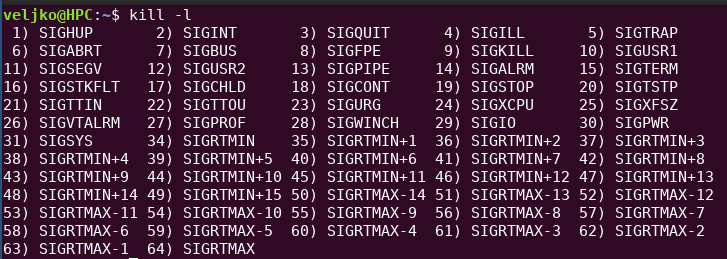
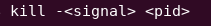
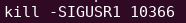
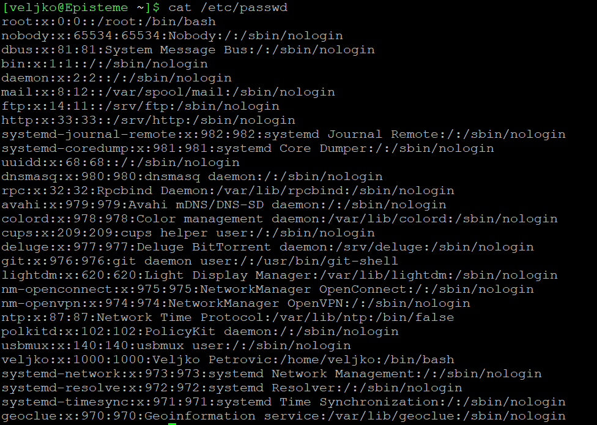
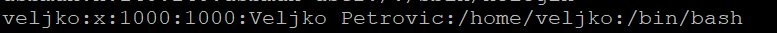
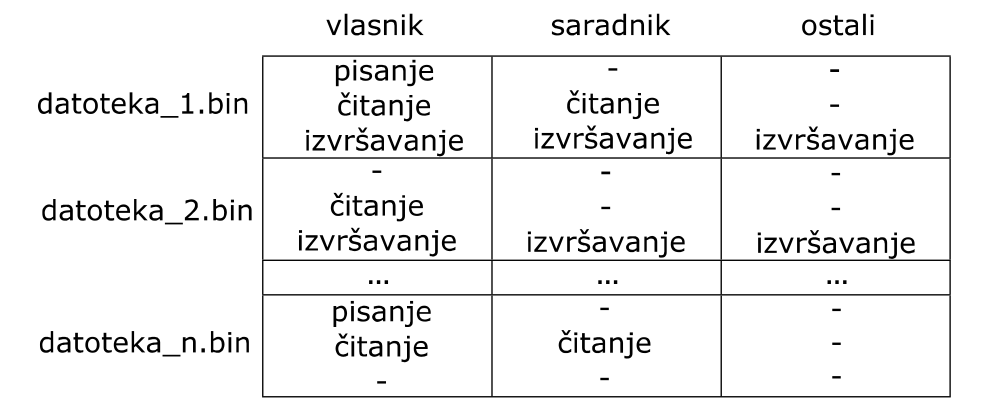
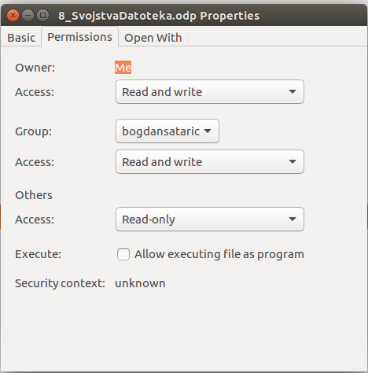
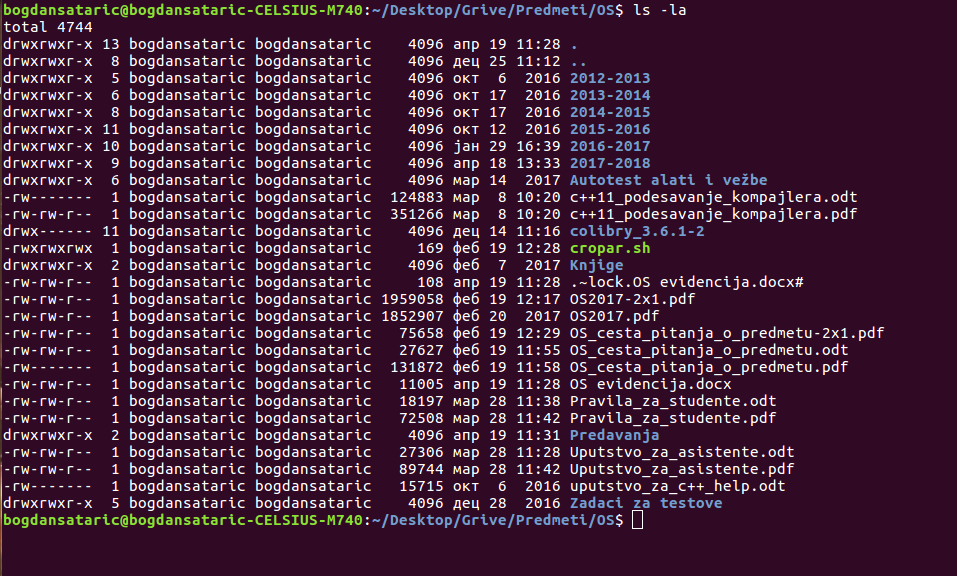

Operativni Sistemi - Apstrakcije operativnog sistema
Veljko Petrović
2026-01-01
Apstrakcije operativnog sistema
Uvod
- Ova sekcija predavanja uvodi apstrakcije operativnih sistema.
- Za razliku od rada sa simulatorom i
xv6, sada se fokusiramo na te apstrakcije onakvim kakve su u modernim, moćnim, produkcionim operativnim sistemima. - Uglavnom, pod tim mislimo Linux.
Implementacija
- Implementacija ovih apstrakcija na nivou na kome su implementirani u, recimo, Linux operativnom sistemu je, efektivno, nemoguća za objašnjenje u okvirima ovakvog kursa: Linux kernel ima nekih 40 000 000 linija koda, i težak je za razumevanje.
- Stoga se fokusiramo na to kako ove apstrakcije rade, što one rade na taj način i, donekle, kako se koriste.
Razlike od udžbenika
- Ovi slajdovi se donekle razlikuju od udžbenika utoliko ukoliko modernizuju detalje, i fokusiraju se na praktičnu implementaciju.
- Slajdovi nisu zamena za udžbenik, no treba da se koriste uz njega.
Konvencija
- U ovim slajdovima je ponekad potrebno da se pozovemo na Linux dokumentaciju.
- Linux ima ugrađen alat za pregled dokumentacije,
man(skraćeno odmanual) mada naravno, sve je dostupno i kao hiperlinkovane web stranice na više mesta. - Kada treba da se pozovemo na nešto iz dokumentacije, biće napisana ključna reč, recimo
reada onda, posle toga u zagradama broj poglavlja, u ovom slučajuread(2). - Možete da tražite
man read(2)online, i gotovo sigurno ćete dobiti link ka nečemu kao što jehttps://man7.org, a možete na bilo kom Linux računaru da ukucateman 2 readsa istim efektom.
Sloj za Rukovanje Procesima
Sloj OS za rukovanje procesima
- Osnovni zadaci sloja za rukovanje procesima su:
- stvaranje procesa
- uništenje procesa.
- Stvaranje procesa obuhvata:
- stvaranje slike procesa
- stvaranje deskriptora procesa
- pokretanje aktivnosti procesa
- Uništenje procesa obuhvata:
- zaustavljanje aktivnosti procesa
- uništenje slike procesa
- uništenje deskriptora procesa
Osnovni zadaci sloja za rukovanje procesima
- Pored sistemskih operacija stvaranja i uništenja procesa, potrebne su i sistemske operacije za izmenu atributa procesa, na primer, za izmenu radnog imenika (direktorijuma) procesa.
- Slika procesa obuhvata niz lokacija radne memorije sa uzastopnim (logičkim) adresama. Ona sadrži svu memoriju procesa.
Šema rasporeda u memoriji
Raspored u memoriji
- Ovo je karakterističan raspored C programa.
- Tekst je ona
.textsekcija poznata iz asemblera: to je mašinski kod programa. .dataje mesto gde će biti globalne promenljive, a.rodatakonstante..bssje malo neobično: to je posebna sekcija samo za vrednosti incijalizovane na nulu. Pošto je to toliko teško, oni se čuvaju odvojeno.
Što odvojen .bss
- Objašnjenje što odvojen
.bssotkriva jednu bitnu osobinu ponašanja operativnih sistema. - Izvršni fajlovi su, u mnogo čemu, samo “dehidrirane” slike procesa. Tačno ono što će ići u memoriju, složeno na gomilu tako da to može da operativni sistem kasnije ‘raspakuje’.
Što odvojen .bss
- Imati brdo nula u toj datoteci se čini gubitkom prostora (i jeste), pa se jednostavno čuva koliko tih nula treba da bude i gde treba da budu, ali se nule generišu u vreme stvaranja procesa.
- Stoga
.bsskao odvojen deo.
Stek i heap
- Dva najvažnija regiona memorije su na suprotnim stranama to je stek i heap.
- Stek je region memorije koji počinje na najvišoj adresi, i raste ka manjim aresama. Na njegov vrh pokazuje
%rspodn.spregistar, i na njega se odnosepushipopkomande. - U zavisnosti od ABI-ja lokalne platforme stek služi da čuva argumente funkcije, povratnu adresu, i sve lokalne promenljive.
Stek
- Ako hoćemo da čuvamo još podataka na steku, samo treba da oduzmemo vrednost od odgovarajućeg registra, i stek postaje veći.
- Ali ovo ima ograničenja. Prvo, stekovi podrazumevano imaju ograničenu veličinu, na tipičnom Linux sistemu, to je
8 MiBpo niti (mada ne uvek; videti pthread_create(3)). - Možete proveriti koja je granica na vašem sistemu sa
ulimit -s
Stek
- Drugi problem steka je to što mora da ispunjava ABI standard oko toga kako se koristi: svaki objekat na steku traje taman dok mu se funkcija ne završi kada se sve pop-uje, i ta memorija postane nešto drugo.
- Štaviše, iako možete da radite šta hoćete sa stekom, svaki jezik će se boriti protiv vas i neće vam dati da na njemu pravite strukture čija veličina nije poznata u vreme kompajliranja.
Heap
- Heap ili “hip” ili “gomila” je region memorije koji je zamišljen da reši problem dinamičkog alociranja memorije.
- On se nalazi na adresama odmah posle teksta, konstanti, i globalnih promenljivih, i raste ka većim adresama.
- Na početku, prostor između steka i heap-a je pristutan u adresnom prostoru, ali fizički iza njega nema memorije.
Heap
- Tačka gde prestaju virtuelne adrese koje imaju nešto iza sebe, i počinju “prazne” adrese se zove prekid programa (eng. program break).
- Možemo da kontrolišemo gde je prekid programa koristeći
brkisbrksistemske pozive. Pomeranje prekida unazad, de-alocira memoriju, pomeranje prekida unapred alocira memoriju. - Videti
brk(2)isbrk(2)— prvi pomera prekid na proizvoljnu poziciju, drugi ga podešava za neki ofset.
Mapa memorije prosečnog procesa
- Ako pokrenemo potpuno običan “Hello World” program u GDB okruženju za debagovanje, stanemo preko
breakpointmehanizma u sred izvršavanja, i izvršimoinfo proc mappingskomandu u debageru, dobićemo detaljnu mapu svakog komada memorije slike procesa, čemu služi, i šta su joj dozvole.
Mapa memorije prosečnog procesa, editovana
Start Addr Size Offset Perms File
0x0000555555554000 0x1000 0x0 r--p hw0
0x0000555555555000 0x1000 0x1000 r-xp hw0
0x0000555555556000 0x1000 0x2000 r--p hw0
0x0000555555557000 0x1000 0x2000 r--p hw0
0x0000555555558000 0x1000 0x3000 rw-p hw0
0x00007ffff7c00000 0x24000 0x0 r--p libc.so.6
0x00007ffff7c24000 0x171000 0x24000 r-xp libc.so.6
0x00007ffff7d95000 0x70000 0x195000 r--p libc.so.6
0x00007ffff7e05000 0x4000 0x204000 r--p libc.so.6
0x00007ffff7e09000 0x2000 0x208000 rw-p libc.so.6Mapa memorije prosečnog procesa, editovana
0x00007ffff7e0b000 0x8000 0x0 rw-p
0x00007ffff7f61000 0x5000 0x0 rw-p
0x00007ffff7fba000 0x4000 0x0 r--p [vvar]
0x00007ffff7fbe000 0x2000 0x0 r--p [vvar_vclock]
0x00007ffff7fc0000 0x2000 0x0 r-xp [vdso]
0x00007ffff7fc2000 0x1000 0x0 r--p ld-linux-x86-64.so.2
0x00007ffff7fc3000 0x2a000 0x1000 r-xp ld-linux-x86-64.so.2
0x00007ffff7fed000 0xe000 0x2b000 r--p ld-linux-x86-64.so.2
0x00007ffff7ffb000 0x2000 0x39000 r--p ld-linux-x86-64.so.2
0x00007ffff7ffd000 0x1000 0x3b000 rw-p ld-linux-x86-64.so.2
0x00007ffff7ffe000 0x1000 0x0 rw-p
0x00007ffffffdd000 0x22000 0x0 rw-p [stack]
0xffffffffff600000 0x1000 0x0 --xp [vsyscall]Objašnjenje
- Deo onoga što je u memoriji dolazi, kao što smo pričali, iz samog izvršnog fajla. To je označeno sa ‘hw0’ kako sam ja nazvao izvršni fajl.
- Neki delovi su anonimni: ne dolaze iz fajla, i obično su
bsssekcije, ili specijalno mapirani regioni memorije. - Primetite da osim što imamo namapiran naš fajl, imamo i dva dodatna fajla koja nismo pomenuli.
Biblioteke
- Pošto koristimo
printfmoramo da imamo pristup biblioteci u kojoj je to definisano. To je standardna c biblioteka, poznata takođe kao ilibc, dok jesoekstenzija za dinamičke biblioteke u Linux operativnom sistemu. - Windows ekvivalent je ‘DLL’
- Mehanizam koji učitava biblioteke kad zatrebaju je dinamički linker, i to je onaj
ld-linux-x86-64.so.2koji imamo pomenut.
Dinamičko i statičko linkovanje
- Statičko linkovanje je relativno jednostavno: uzmemo kod koji nam treba, i ukačimo ga direktno u izvršni fajl.
- Jedino kako se ovo razlikuje od copy-paste koda jeste što kod uključujemo u objektnoj formi, tj. pošto je već kompajliran što je brže.
- Problem je što ovo čini izvršne fajlove velikim, i troši dosta memorije.
Dinamičko linkovanje
- Dinamičko linkovanje zaobilazi taj problem tako što linker, program koji naš kod povezuje u izvršnu datoteku, umesto da ubaci izvršni kod biblioteka koje nam trebaju, ubaci kod koji traži tu adresu u tabeli koju konstruiše, u kojoj je svaka stavka neki simbol koji je potreban, ali kome se, za sada, ne zna lokacija u memoriji.
- Ako bi ovakav program izvršili, on bi se srušio, jer bi svaki poziv eksterne funkcije ustvari učitao nenameštenu vrednost iz tabele, i pokušao da izvrši to.
Dinamičko linkovanje
- Stoga, pre nego se izvrši naš program, sistem ubaci brzo izvršavanje
ld-linux-x86-64koji prođe kroz našu tabelu, identifikuje šta nam treba i gde se to može naći (kad kompajliramo i linkujemo mi ubeležimo koja nam biblioteka treba, i koji simbol) - Dinamički linker nađe gde su tražene biblioteke (postoji nešto što se zove putanja bibloteka gde će gledati da nađe odgovarajuće fajlove: to su direktorijumi kao što je
/lib/ili/lib64/ili/usr/lib/)
Dinamičko linkovanje
- Pošto zna koja biblioteka i koji simbol nam treba, linker lako učita šta treba u memoriju, i popuni onu tabelu stvarnih lokacija.
- Sada kada se konačno izvrši naš kod, kad zatreba funkcija
printfnađe se njena korektna lokacija, i izvrši se to i sve radi.
Dinamičko linkovanje
- Nećemo ulaziti u previše detalja, ali ključne su dve tabele: PLT i GOT.
- PLT (eng. Procedure linkage table) je lista malih funkcija koje ili skaču na kod za rezoluciju imena (ako funkcija još nije pozvana u datom kontekstu) ili na odgovarajuću adresu čuvanu u GOT-u
- GOT (eng. Global Offset Table) je tabela koja čuva sve adrese simbola kada budu određene,
.got.pltje za funkcije specifično.
Dinamičko linkovanje
- Ovaj obrazac je poznat kao “trampolina” jer skačemo na funkciju koja odmah skače negde drugde, i tim možemo, editujući podatke, da modifikujemo šta se izvršava.
- Ovo je naročito bitno zato što memorija na modernim sistemima ili može da se piše ili da se izvršava. Ne oboje.
Što?
- Prva prednost je, kao što smo pomenuli, izvršni fajl je manji, i sistem može da ima jednu kopiju biblioteke koje koristi bilo koji broj aplikacija.
- Ovo nije loše, ali nema štednje memorije: svaki taj fajl i dalje mora da se učita.
- Rešenje je deljenje memorije.
Što?
- Kada operativni sistem učita relevantne delove
.sofajlova u memoriju, može da, kada neki drugi proces zatraži isto, da jednostavno mapira istu fizičku memoriju na virtualne prostore dva različita procesa. - Procesi mogu samo da kod čitaju i izvršavaju, tako da su konflikti nemogući, a svaka biblioteka se učitava samo jednom.
Nesavršenost sveta
- U praksi, ovo nije tako glatko kao što bi ste pomislili.
- Programi često vole vrlo specifične verzije biblioteka, što znači da programi često nose sa sobom sve biblioteke koje će im zatrebati (vrlo čest slučaj za Windows, ali sve češće na modernom Linux-u) i nema štednje memorije.
Drugi regioni memorije
- Sekcije koje počinju sa
vsu nešto što ubacuje operativni sistem da učini pozivanje sistemskih poziva bržim. - Specifično, to su regioni kernel prostora namapirani na korisnički da bi se učinilo deljenje određenih često-korišćenih sistemskih podataka lakšim.
- Klasičan primer je trenutno vreme: definitivno kernel podatak, ali ne baš tajan.
Stek
- Stek se nalazi na drugom kraju memorije, kako smo i pričali i označen je notacijom
[stack]. - Primetite da nema heap. Pogledajte šta se dešava, ako promenimo kod našeg prostog programa.
Minimalna alokacija
Minimalna alokacija
- Ovo je program gde alociramo 4KiB, popunimo ih nekim vrednostima, i onda ih to dealociramo tako što pomerimo prekid programa nazad 4KiB.
- U tački gde se piše “Hello World” raspored u memoriji je identičan omom koji smo već videli.
- Ali, ako ga ispitamo na liniji gde štampamo “Done allocating.” vidimo promenu.
Mapa posle sbrk, editovana
Start Addr Size Offset Perms File
0x0000555555554000 0x1000 0x0 r--p hw1
0x0000555555555000 0x1000 0x1000 r-xp hw1
0x0000555555556000 0x1000 0x2000 r--p hw1
0x0000555555557000 0x1000 0x2000 r--p hw1
0x0000555555558000 0x1000 0x3000 rw-p hw1
0x0000555555559000 0x22000 0x0 rw-p [heap]
0x00007ffff7c00000 0x24000 0x0 r--p /usr/lib/libc.so.6
0x00007ffff7c24000 0x176000 0x24000 r-xp /usr/lib/libc.so.6
0x00007ffff7d9a000 0x75000 0x19a000 r--p /usr/lib/libc.so. Heap
- Kada se pozove
sbrkiznenada se pojavi[heap]sekcija - Primetite kako je veličina tog novog regiona ne 4KiB nego 0x22000 bajtova, odnosno 136KiB.
- To je zato što kada priprema heap, sistem alocira 132KiB odmah: 128KiB prostora, i malo preko za metapodatke.
- Mi smo mimo toga još pomerili programski prekid za 4KiB, te je total 136KiB.
Heap
- Ovo ilustruje zašto dokumentacija lepo moli korisnika da ne koristi
brkisbrkdirektno, jer kada bi koristili malloc, onda bi dobili memoriju iz tog prealociranog128KiBsloja. - Ako bi probali to sa kodom koji koristi
mallocumestosbrkdobili bi manji region, jer bi bio alociran prostor iz onih 128 KiB i posle alokacije veličina[heap]regiona bi bila samo0x21000.
Veće alokacije
- Ako modifikujemo program da alocira 4 MiB memorije, očekivali bi istu stvar, samo sa većim heap-om na kraju toga.
- Ali ako pokušamo eksperiment, nećemo dobiti očekivan rezultat.
Nov kod
Editovana nova mapa memorije
Start Addr Size Offset Perms File
0x0000555555554000 0x1000 0x0 r--p hw3
0x0000555555555000 0x1000 0x1000 r-xp hw3
0x0000555555556000 0x1000 0x2000 r--p hw3
0x0000555555557000 0x1000 0x2000 r--p hw3
0x0000555555558000 0x1000 0x3000 rw-p hw3
0x0000555555559000 0x21000 0x0 rw-p [heap]
0x00007ffff77ff000 0x401000 0x0 rw-p
0x00007ffff7c00000 0x24000 0x0 r--p libc.so.6
0x00007ffff7c24000 0x176000 0x24000 r-xp libc.so.6Šta se desilo?
- Kada pozovete
mallocda alocirate malecne regione memorije,mallockoristi heap. - Kada alocirate nešto substantivno, sa druge strane, koristiće se potpuno drugi metod, koji alocira nov region memorije samo za tu alokaciju.
- Ovo je popularno na modernim sistemima koji imaju apsolutno ogroman virtuelni adresni prostor, jer je u njemu uvek lako naći region prave veličine, umesto da se brinemo o fragmentaciji heap-a.
- Plus, možemo da između tih regiona ostavimo prostor, što znači da u slučaju prepisivanja bafera, nećemo pregaziti druge regione: okinućemo hardverski izuzetak pre toga.
Kako?
- Iza kulisa, umesto
brkisbrkkoristi semmap, koji nam omogućava da mapiramo proizvoljne dodatne regione virtuelne memorije koji se ponašaju kako mi želimo. - Možemo ovo da uradimo i rukom, ako želimo.
mmap alokacija
#include <stdio.h>
#include <sys/mman.h>
#include <unistd.h>
int main() {
printf("Hello, world!\n");
int *newmem =
(int *)mmap(NULL, 1024 * 1024 * sizeof(int), PROT_READ | PROT_WRITE,
MAP_ANONYMOUS | MAP_PRIVATE, -1, 0);
for (int i = 0; i < 1024 * 1024; i++) {
newmem[i] = i * i;
}
printf("Done allocating.\n");
munmap(newmem, 1024 * 1024 * sizeof(int));
printf("Deallocated.\n");
return 0;
}mmap
- Ovaj sistemski poziv je neverovatno moćan, i videćemo kako može da radi kada
se budemo bavili fajlovima. - Valja napomenuti da je ovaj pristup metod kojim možemo da obezbedimo sistem gde se kod samo-modifikuje.
- Sve što treba da uradimo jeste da mmap-ujemo region memorije kao
rwi onda ga napunimo mašinskim kodom, željenim, i koristimomprotectda to promenimo urx, i onda možemo da skočimo direktno u taj kod i izvršimo ga.
Osnovni zadaci sloja za rukovanje procesima
- Pored slike, za aktivnost procesa je važan i deskriptor procesa, koji sadrži atribute procesa.
- Ovi atributi karakterišu aktivnost procesa. Oni obuhvataju:
- stanje procesa (“spreman”, “aktivan”, “čeka”)
- sadržaje procesorskih registara (zatečene u njima pre poslednjeg preključivanja procesora sa procesa)
- numeričku oznaku vlasnika procesa
- oznaku procesa stvaraoca
- trenutak pokretanja aktivnosti procesa
Osnovni zadaci sloja za rukovanje procesima
- ukupno trajanje aktivnosti procesa (odnosno, ukupno vreme angažovanja procesora)
- podatke o slici procesa (njenoj veličini i njenom položaju u radnoj i masovnoj memoriji)
- podatke o datotekama koje proces koristi
- podatak o radnom imeniku procesa
- razne podatke neophodne za upravljanje aktivnošću procesa (poput prioriteta procesa ili položaja sistemskog steka procesa, koga koristi operativni sistem u toku obavljanja sistemskih operacija).
Podaci o procesu u Linux operativnom sistemu
- Pristupiti podacima o nekom procesu u Linux-u se bazira na dobro poznatoj UNIX filozofiji: sve je fajl.
- U ovom slučaju, podaci o procesu su dostupni u fajlovima, i mogu lako da se čitaju iz fajlova.
- Kako? Kernel je taj koji odlučuje gde postoje fajlovi i kako rade kroz svoj sistem fajlova. Normalno, ovo znači da kernel određuje gde će snimiti koje podatke na disku, ali ništa ne sprečava kernel da ignoriše disk, i bazira sistem podataka na… bilo čemu drugom.
Virtuelni fajl sistemi
- Ovaj trik se ponekad zovu virtuelni fajl sistemi, i ideja je jednostavna: pristup sekvenci bajtova koja čini fajl je nešto što pruža kernel. Ako želi, ti bajtovi mogu da dođu odakle god želite.
- Kao rezultat, gomila podataka i podešavanja vezana za to kako sistem trenutno radi je izložena korisniku preko fajlova iza kojih se nalaze strukture podataka Kernela.
Virtuelni fajl sistemi prosečnog Linux računara, editovani
devtmpfs /dev devtmpfs
tmpfs /dev/shm tmpfs
devpts /dev/pts devpts
sysfs /sys sysfs
securityfs /sys/kernel/security securityfs
cgroup2 /sys/fs/cgroup cgroup2
efivarfs /sys/firmware/efi/efivars efivarfs
bpf /sys/fs/bpf bpf
proc /proc proc
tmpfs /run tmpfs
mqueue /dev/mqueue mqueue
tracefs /sys/kernel/tracing tracefs
debugfs /sys/kernel/debug debugfs
hugetlbfs /dev/hugepages hugetlbfs
tmpfs /tmp tmpfs
configfs /sys/kernel/config configfs
fusectl /sys/fs/fuse/connections fusectl Virtuelni fajl sistemi
- Lista proističe sa putanje
/etc/mtab. - Nećemo preći šta svaki radi, bitno je videti da ja ovo trik koji se može koristiti za gomilu stvari.
- Nas zanima specifično
/dev,/sysi/proc procprikazuje sve podatke o procesima,devo uređajima, asyssu trentuna podešavanja sistema, kernela naročito.
proc fajl sistem
- Apsolutno sve što možete da saznate o procesu je u fajlovima unutar direktorijuma
/proc/PIDgde je PID identifikator procesa koji nas zanima. - Tu se nalaze tačna komanda koja je korišćena za pokretanje procesa u
cmdline, ilicwdšto je link ka tekućem radnom direktorijumu tog procesa. - Pod-direktorijum
fdsadrži sve otvorene datoteke datog procesa, pod brojevima pod kojim su otvorene. - Datoteka
mapssadrži tačno one podatke o regionima memorije koje smo prikazivali izgdb. Odatle ih igdbčita.
Datoteka status
- Datoteka
statuspredstavlja pregled, u tekstualnoj formi, osnovnih elemenata deskriptora procesa. - Ovo nisu svi podaci, ali jeste većina onoga što treba da znate.
Status triviljanog programa
Name: hw0
Umask: 0022
State: S (sleeping)
Tgid: 171831
Ngid: 0
Pid: 171831
PPid: 18106
TracerPid: 0
Uid: 1000 1000 1000 1000
Gid: 1000 1000 1000 1000
FDSize: 64
Groups: 98 984 985 996 998 999 1000
NStgid: 171831
NSpid: 171831
NSpgid: 171831
NSsid: 18106
Kthread: 0
VmPeak: 2956 kB
VmSize: 2752 kB
VmLck: 0 kB
VmPin: 0 kB
VmHWM: 1732 kB
VmRSS: 1732 kB
RssAnon: 100 kB
RssFile: 1632 kB
RssShmem: 0 kB
VmData: 204 kB
VmStk: 136 kB
VmExe: 4 kB
VmLib: 1672 kB
VmPTE: 48 kB
VmSwap: 0 kB
HugetlbPages: 0 kB
CoreDumping: 0
THP_enabled: 1
untag_mask: 0xffffffffffffffff
Threads: 1
SigQ: 0/256621
SigPnd: 0000000000000000
ShdPnd: 0000000000000000
SigBlk: 0000000000000000
SigIgn: 0000000000000000
SigCgt: 0000000000000000
CapInh: 0000000800000000
CapPrm: 0000000000000000
CapEff: 0000000000000000
CapBnd: 000001ffffffffff
CapAmb: 0000000000000000
NoNewPrivs: 0
Seccomp: 0
Seccomp_filters: 0
Speculation_Store_Bypass: thread vulnerable
SpeculationIndirectBranch: conditional enabled
Cpus_allowed: ffffffff
Cpus_allowed_list: 0-31
Mems_allowed: 00000000,00000000,00000000,00000000,00000000,00000000,00000000,00000000,00000000,00000000,00000000,00000000,00000000,00000000,00000000,00000000,00000000,00000000,00000000,00000000,00000000,00000000,00000000,00000000,00000000,00000000,00000000,00000000,00000000,00000000,00000000,00000001
Mems_allowed_list: 0
voluntary_ctxt_switches: 1
nonvoluntary_ctxt_switches: 2
x86_Thread_features:
x86_Thread_features_locked:Stvaranje procesa
- Stvoriti nov proces je veoma jednostavno: sve što treba da uradite jeste da pozovete
forksistemski poziv i imaćete dva procesa. Dva identična procesa, istina, ali dva procesa. - Proces “original” se onda zove “roditelj”, a novostvoreni proces je potomak ili “dete”.
- Možete razlikovati da li je u pitanju roditelj ili dete po tome šta vrati
fork: roditelj dobije PID deteta, a potomak nulu.
Stvaranje procesa
Stvaranje procesa
- Ovo pokreće procese u paraleli (ovako se nekad radilo konkurentno programiranje) ali ponekad nam je potrebno da pokrenemo dete-proces i sačekamo da se on završi.
- Kada sačekamo proces, kao bonus, dobijemo povratnu vrednost koju je vratio, što znači da možemo da dobijemo signal da li je dete-proces uradilo nešto ili ne.
Čekanje procesa
Čekanje procesa
- Potreban nam je makro
WEXITSTATUSzato što je celobrojna vrednost koju dobijemo sadrži povratni kod u zadnjih 8 bita, a ostatak služi za druge stvari, videtiwait(2)za detalje. - Koristimo
waitoperaciju koja čeka da se bilo koje proces-dete terminira, ali možemo biti i specifični tako što zamenimowaitsawaitpidi prosledimopidna koji čekamo.
Pokretanje drugog procesa
- Sve što nam
forkomogućava, jeste da napravimo savršen klon trenutnog procesa, što može da bude korisno, ali šta ako hoćemo da pokrenemo neki nov program? - Onda nam trebaju sistemski pozivi iz porodice
execi putanja do izvršne datoteke. - Poziv
execse ponaša čudno: umesto da pokrene nov proces sa specificiranom izvršnom datotekom, on umesto zameni tekući proces sa tim procesom.
Exec zamena
Exec
- Ako probate ovaj program (objasnićemo kako radi uskoro), videćete da on neće ispisati treću poruku: program jednostavno nikad ne stigne do nje.
Exec
execveje sistemski poziv, i prima tri parametra.- Prvi je tačna putanja do izvršne datoteke koju želimo da izvršimo.
- Drugi su parametri komandne linije koje očekuje kao niz nizova karaktera: svaki od nizova karaktera mora biti terminiran sa NULL simbolom (dakle C stil stringa), a i niz nizova mora biti terminiran vrednošću koja je NULL.
- Po konvenciji, prvi argument u nizu nizova je ime pod kojim se program startuje.
Exec
- Treći parametar se zove okruženje i zavisi od koncepta sistemskih promenljivih.
- Svakom procesu koji se pokrene je dostupno okruženje koje se sastoji od ključeva i vrednosti koje predstavlja konfiguraciju sistema.
- Normalno, proces komunikator je ono što podešava te vrednosti na osnovu vašeg konfiguracionog fajla komunikatora (profila).
Okruženje
- Možete lako pročitati promenljivu koristeći standardnu biblioteku: funkcija se zove
getenvi očitava promenljivu koju specificirate. - Primitivniji metod (što je kako i sam
getenvradi) jeste eksterna promenljivaenvironkoju sam operativni sistem ubrizgava u okruženje procesa.
Okruženje - getenv
Okruženje - environ
Okruženje - environ
strsepje malo neobična funkcija, i služi za sledeći problem: imate stringove koji su razdvojeni nekim simbolom; kod nas to je=zato što je svaka stavka uenvironpromenljivi oblikaKEY=VAL. Hoćete da odvojeno pristupate stringovima na levoj i desnoj strani tog simbola koga zovemo delimiter.strsepto radi tako što nađe prvo mesto gde se pojavljuje bilo šta iz stringa za delimiter i zameni taj simbol sa simbolomNULL.
Okruženje - environ
- Onda promeni prvi pokazivač (koji smo poslali kao pokazivač na pokazivač baš da bi mogao biti promenjen) na vrednost tik posle delimitera, a vrati vrednost koja pokazuje na početak stringa.
- Rezultat: vrati pokazivač na string stvari levo od delimitera, a prvi parametar pretvori u pokazivač na sve desno od delimitera.
- Bonus bodovi: ne alocira ništa za ovo.
Exec
- Kada pozivamo nešto sa
execveonda treći parametar može da budeNULLu kom slučaju proces-dete jednostavno dobije istu stvar kao i proces roditelj: sadržajenvironpromenljive. - Alterantiva je da prosledimo kao treći parametar nešto što je formatirano tačno kao
environpromenljiva što sadrži okruženje koje hoćemo da pripremimo za proces-potomak.
Exec
- Sistemski poziv
execvemože da bude nezgodan za upotrebu, naročito iritirajuće jeste što moramo da znamo gde je tačno svaki izvršni fajl koji hoćemo da pokrenemo. - Svi moderni operativni sistemi prepoznaju koncept sistemske putanje, odnosno
PATHsistemske promenljive, što je lista direktorijuma gde treba da tražimo izvršnu datoteku, ako ne znamo njenu putanju. - Zato kucate
lsa ne/usr/bin/ls.
Exec
- Zato, standardna biblioteka ima čitavu porodicu funkcija koje su sve omotač oko
execve, i koje olakšavaju upotrebu. - Naročito zanimljiva je
execvpekoja radi apsolutno isto kao iexecve, samo što sama pretraži celu sistemsku putanju za ime izvršne datoteke koje specificirate. - Postoji i
execvpvarijanta, koja ne radi sa okruženjem nego ga samo prosledi; viditeexec(3)za detalje.
Exec
- Budući da exec zamenjuje celu sliku procesa koja ga izvrši, tipično se koristi u tandemu sa
forkkomandom, gde se stvori proces-potomak, a onda se pokreneexecunutar potomka, zamenjujući šta je tu, sa drugim procesom. - Ovo je toliko često, da postoji ultra-brza varijanta
forksistemskog poziva napravljena samo za brzu zamenu (i ne radi za bilo šta drugo) –vfork, videtivfork(2)za detalje.
Exec
Zašto?
- Ovo se može činiti kao jedna potpuno nepotrebna komplikacija, ali ima svoje razloge.
- Vrlo čest obrazac jeste da se proces
fork-uje, a da se onda u procesu-potomku modifikuju neki detalji, a da se onda pozoveexeckoji će te promene naslediti (budući da menja sliku ali neke stvari ostaju). - U sekciji o fajlovima, demonstriraćemo kako to može da se koristi za redirekciju standardnog ulaza i izlaza.
Rukovanje nitima
- Rukovanje nitima može, ali i ne mora, biti u nadležnosti sloja za rukovanje procesima.
- Kada je rukovanje nitima povereno sloju za rukovanje procesima, tada operativni sistem nudi sistemske operacije za rukovanje nitima, koje omogućuju stvaranje, uništavanje i sinhronizaciju niti.
- U ovom slučaju, deskriptori i sistemski stek niti se nalaze u sistemskom prostoru, dok se sopstveni stek niti nalazi u korisničkom prostoru (unutar slike procesa).
Rukovanje nitima
- U slučaju kada rukovanje nitima nije u nadležnosti operativnog sistema, brigu o nitima potpuno preuzima konkurentna biblioteka.
- Pošto ona pripada slici procesa, rukovanje nitima u ovom slučaju se potpuno odvija u korisničkom prostoru, u kome se nalaze i deskriptori niti, kao i stekovi niti.
- Osnovna prednost rukovanja nitima van operativnog sistema (ovo se još zovu i “zelene niti”) je efikasnost, jer su pozivi potprograma konkurentne biblioteke brži (kraći) od poziva sistemskih operacija.
Rukovanje nitima
- Ove niti se ne izvršavaju brže, štaviše tipično se izvršavaju sporije
- Ono što ih čini bržim jeste to što njihovo stvaranje, uništavanje, itd. zahteva manje vremena i memorije
- Generalno pravilo jeste da se sistemske niti koriste kada želite paralelizam, a ne-sistemske preferiraju kada je u pitanju asinhron proces koji obrađuje ulaz i izlaz.
Rukovanje nitima
- Ali, kada operativni sistem ne rukuje nitima, tada poziv blokirajuće sistemske operacije iz jedne niti dovodi do zaustavljanja aktivnosti procesa kome ta nit pripada, jer operativni sistem pripisuje sve pozive sistemskih operacija samo procesima, pošto ne registruje postojanje niti.
- Na taj način se sprečava konkurentnost unutar procesa, jer zaustavljanje aktivnosti procesa sprečava aktivnost njegovih spremnih niti.
- Zato savremeni operativni sistemi podržavaju rukovanje nitima. Tako, u okviru POSIX (Portable Operating System Interface) standarda (IEEE 1003 ili ISO/IEC 9945) postoji deo pthread (POSIX threads) koji je posvećen nitima.
- Ako ipak želimo ne-sistemsko rukovanje onda okruženje koje se koristi mora vrlo pažljivo koristiti (ispod haube) isključivo ne-blokirajuće operacije i uspostavljati preključivanje među nitima koje je efektno.
Osnove komunikacije između procesa
- Komunikacija između procesa može biti, kroz POSIX:
- Signal
- Baferi (Pipe, FIFO, Message Queue)
- Deljena memorija
- Semafori
Signali
- Signali su softverski prekidi koji označavaju da se u sistemu desio nekakav događaj.
- Ponekad ih generišu drugi procesi, ponekad sam operativni sistem, a ponekad korisnik direktno.
- Signali imaju različito značenje
- Može se dobiti kompletna lista iz operativnog sistema
Signali

Reakcija na signale
- Svaki tip signala ima jednu podrazumevanu akciju iz sledećeg skupa:
- Term
- Proces koji dobija signal se terminira.
- Ign
- Proces koji dobija signal ga ignoriše.
- Core
- Podrazumevana akcija jeste da se terminira proces i da se u fajl izbaci sva memorija procesa.
- Stop
- Proces se pauzira.
- Cont
- Proces se nastavi ako je pauziran.
- Term
Namena signala
| Ime signala | Broj signala | Reakcija | Svrha |
|---|---|---|---|
| SIGTERM | 15 | Term | Signal za terminaciju |
| SIGUSR1 | 10 | Term | Rezervisan za korisnika. |
| SIGUSR2 | 12 | Term | Rezervisan za korisnika. |
| SIGCHLD | 17 | Ign | Dete-proces je prekinut. |
| SIGCONT | 18 | Cont | Nastavi izvršavanje. |
| SIGSTOP | 19 | Stop | Pauziraj izvršavanje. |
| SIGSTP | 20 | Stop | Pauziraj izvršavanje (pokrenut sa terminala) |
Namena signala
| Ime signala | Broj signala | Reakcija | Svrha |
|---|---|---|---|
| SIGBUS | 7 | Core | Greška magistrale |
| SIGPOLL | 29 | Term | Sinonim za SIGIO |
| SIGPROF | 27 | Term | Tajmer za profiliranje je istekao |
| SIGSYS | 31 | Core | Greška u sistemskom pozivu. |
| SIGTRAP | 5 | Core | Breakpoint dostignut. |
| SIGURG | 23 | Ign | Hitna reakcija na socket-u. |
| ISGVTALRM | 26 | Term | Virtualni alarm |
Namena signala
| Ime signala | Broj signala | Reakcija | Svrha |
|---|---|---|---|
| SIGIOT | 6 | Core | Isto što i SIGABRT. |
| SIGIO | 29 | Term | I/O sada moguć. |
| SIGPWR | 30 | Term | Greška sa napajanjem. |
| SIGTTIN | 21 | Stop | Komunikacija sa terminalom za poz. proces |
| SIGTTOU | 22 | Stop | Komunikacija sa terminalom za poz. proces |
| SIGXCPU | 24 | Core | Potrošeno svo CPU vreme. |
| SIGXFSZ | 25 | Core | Potrošeno ograničenje veličine fajla. |
Slanje signala

Slanje signala

Slanje signala
Reagovanje na signal
Reagovanje na signal
Baferi
- Bafer je opšte ime za nekoliko metoda za komunikaciju.
- Ovde ćemo pogledati malo bolje ‘pipe’ i ‘fifo’ mehanizam koji funkcioniše kao fajl koji, kad se napravi, ima dva deskriptora: iz jednog se čita, a u drugi piše.
- Više procesa može da deli ove, sa tim da ako jedan piše, drugi ne može. To se rešava tako što svaki proces zatvori ono što nije neophodno.
- Pipe živi koliko i jedan proces, FIFO je permanentan i ima ime.
Pipe—Include
Pipe Main
Pipe Main
Pipe—Dete proces
Pipe—Roditelj proces
FIFO
- FIFO je apsolutno identičan Pipe mehanizmu sa tom razlikom da ima ime i postojanje koje je nezavisno u odnosu na proces koji ga stvara.
- FIFO uvek postoji negde na disku, tj. ima putanju. Mora se napraviti tako što se otkuca
mknod IME p
Deljena memorija
- Deljena memorija je strahovito brza: bazira se na tome što operativni sistem ništa ne sprečava da namapira istu fizičku memoriju u logičke adresne prostore onoliko procesa koliko želi.
- To znači da šta jedan proces piše, drugi može da čita, bez ikakvog sistema između.
- Problem je naravno što nema nikakve sinhronizacije: to moramo da aranžiramo mi.
Prost primer deljene memorije
#include <err.h>
#include <errno.h>
#include <fcntl.h>
#include <linux/futex.h>
#include <stdatomic.h>
#include <stdint.h>
#include <stdio.h>
#include <stdlib.h>
#include <string.h>
#include <sys/mman.h>
#include <sys/syscall.h>
#include <sys/time.h>
#include <sys/wait.h>
#include <unistd.h>
const char *ID = "/shared_channel_ftn";
const char *MSG1 = "Hello, Bob!";
const char *MSG2 = "Hello, Alice!";
static int futex(uint32_t *uaddr, int op, uint32_t val,
const struct timespec *timeout, uint32_t *uaddr2,
uint32_t val3) {
return syscall(SYS_futex, uaddr, op, val, timeout, uaddr2, val3);
}
static void fwait(uint32_t *f) {
long s;
const uint32_t one = 1;
while (1) {
if (atomic_compare_exchange_strong(f, &one, 0)) {
break;
}
s = futex(f, FUTEX_WAIT, 0, NULL, NULL, 0);
if (s == -1 && errno != EAGAIN) {
exit(1);
}
}
}
static void fnotify(uint32_t *f) {
long s;
const uint32_t zero = 0;
if (atomic_compare_exchange_strong(f, &zero, 1)) {
s = futex(f, FUTEX_WAKE, 1, NULL, NULL, 0);
if (s == -1) {
exit(1);
}
}
}
int main(int argc, char **argv) {
int server = 0;
if (argc >= 2 && argv[1][0] == 's') {
server = 1;
}
char buff[4096] = {0};
printf("Alociram deljeni region na %s\n", ID);
int shm = -1;
if (server) {
shm = shm_open(ID, O_CREAT | O_RDWR, 0660);
ftruncate(shm, 4096);
} else {
shm = shm_open(ID, O_RDWR, 0660);
}
if (shm == -1) {
fprintf(stderr, "Greska kreiranja deljenog objekta.\n");
exit(1);
}
printf("Postavio deljeni region na %d.\n", shm);
char *data =
(char *)mmap(NULL, 4096, PROT_READ | PROT_WRITE, MAP_SHARED, shm, 0);
if (server) {
*((uint32_t *)data) = 0;
strcpy(data + 4, MSG1);
printf("Poslao, cekam odgovor...\n");
fwait((uint32_t *)data);
printf("Odgovor stigao...\n");
strcpy(buff, data + 4);
printf("%s\n", buff);
} else {
printf("Primio...\n");
strcpy(buff, data + 4);
printf("%s\n", buff);
printf("Saljem...\n");
strcpy(data + 4, MSG2);
fnotify((uint32_t *)data);
}
munmap(data, 4096);
if (server) {
printf("Uklanjam deljeni region.\n");
shm_unlink("/shared_channel_ftn");
}
return 0;
}Alternativa
- Kao što vidite, jednostavan primer deljene memorije uključuje lockless programiranje, tako da je ovo tehnika koju koristimo samo kada je zaista neophodno.
- Tipično, ili delimo previše memorije da tolerišemo kopiranje u i iz bafera, ili nam treba svam moguća brzina.
- Očekujte upotrebu ovog pristupa tamo gde se radi trgovanje visoke frekvencije, video-procesiranje, ili ogromni keševi, npr. baza podataka.
Alternative
- Da li ima nešto što je malo civilizovanije, a i dalje brzo?
- Ništa nije brzo kao deljena memorija, naravno (kako bi moglo da bude?) ali su utičnice (eng. socket) dovoljno brze za veliku većinu normalnog rada.
- Utičnice su generalni način na koji procesi mogu da razmenjuju bajtove, i koriste se i za implementiranje mreža, ali nas zanimaju samo UDS: Unix Domain Sockets.
Utičnice
#include <stdio.h>
#include <stdlib.h>
#include <string.h>
#include <sys/socket.h>
#include <sys/un.h>
#include <unistd.h>
const char *PATH = "/tmp/poseban-ftn-socket";
int main(int argc, char **argv) {
int server = 0;
if (argc >= 2 && argv[1][0] == 's') {
server = 1;
}
if (server) {
char buffer[128] = {0};
int sock = socket(AF_UNIX, SOCK_SEQPACKET, 0);
if (sock == -1)
exit(1);
struct sockaddr_un name;
memset(&name, 0, sizeof(name));
name.sun_family = AF_UNIX;
strncpy(name.sun_path, PATH, sizeof(name.sun_path) - 1);
int ret = bind(sock, (const struct sockaddr *)&name, sizeof(name));
if (ret == -1)
exit(2);
printf("Ocekujem veze na %s\n", PATH);
ret = listen(sock, 8);
if (ret == -1)
exit(3);
while (1) {
int dsock = accept(sock, NULL, NULL);
printf("Primio vezu\n");
if (dsock == -1)
exit(4);
int sum = 0;
int quitflag = 0;
while (1) {
ret = read(dsock, buffer, sizeof(buffer));
if (ret == -1)
exit(5);
printf("Primio: %s\n", buffer);
if (ret >= 1 && buffer[0] == '=') {
sprintf(buffer, "%d", sum);
ret = write(dsock, buffer, sizeof(buffer));
if (ret == -1)
exit(6);
} else if (ret >= 1 && buffer[0] == 'd') {
printf("Klijent gotov, raskidam vezu.\n");
break;
} else if (ret >= 1 && buffer[0] == 'q') {
quitflag = 1;
printf("Klijent je poslao quit signal, gasim server.\n");
break;
} else {
sum += atoi(buffer);
}
}
close(dsock);
if (quitflag)
break;
}
close(sock);
unlink(PATH);
} else {
// client
char buff[128] = {0};
int nums[] = {3, 1, 4, 1, 5, 9, 2, 6, 5, 3, 5, 9};
struct sockaddr_un addr;
int dsock = socket(AF_UNIX, SOCK_SEQPACKET, 0);
if (dsock == -1)
exit(1);
memset(&addr, 0, sizeof(addr));
addr.sun_family = AF_UNIX;
strncpy(addr.sun_path, PATH, sizeof(addr.sun_path) - 1);
int ret = connect(dsock, (const struct sockaddr *)&addr, sizeof(addr));
if (ret == -1)
exit(2);
for (int i = 0; i < 12; i++) {
sprintf(buff, "%d", nums[i]);
ret = write(dsock, buff, strlen(buff) + 1);
if (ret == -1)
exit(3);
}
sprintf(buff, "=");
ret = write(dsock, buff, strlen(buff) + 1);
if (ret == -1)
exit(4);
ret = read(dsock, buff, 128);
buff[127] = '\0';
int rez = atoi(buff);
printf("Suma: %d\n", rez);
sprintf(buff, "q");
ret = write(dsock, buff, strlen(buff) + 1);
close(dsock);
}
return 0;
}dbus
- Postoje i moderne verzije IPC-a koje su više sofisticirane.
- Ona koju koristite najviše je
dbuskoja omogućava kreiranje magistrala na kojima se onda mogu slati lepo formatirane poruke. - Ovo je standard za visoko-kompatibilnu nisko-performantnu komunikaciju danas.
- Za brzu komunikaciju, više se koriste drevne tehnike.
Sistemski Procesi
Sistemski procesi
- Sistemski procesi se mogu podeliti na dve glavne grupe: interne mehanizme koji se izvršavaju nezavisno unutar samog jezgra operativnog sistema, i obične procese u korisničkom prostoru koje su blisko povezane sa osnovnim funkcijama sistema.
- Mi ovde ne pravimo neku veliku razliku između njih, zato što je ona, pre svega implementaciona.
Sistemski procesi – nulti proces
- Nulti proces je kao baš i nulta nit: služi da bi uvek bilo nešto što može da se izvrši, večno ili aktivno ili spremno.
- Njegov prioritet je niži od prioriteta svih ostalih procesa, a on postoji za sve vreme aktivnosti operativnog sistema.
- I dalje postoji, na Windows-u je lako vidljiv, dok je na Linux-u skriven od običnih alata, ali je prisutan, na svakoj hardverskoj niti, sa jedinstvenim PID-om 0.
Sistemski procesi – dugoročni raspoređivač
- Drugi primer sistemskog procesa je proces dugoročni raspoređivač, koji se brine o tome koje su stranice u radnoj memoriji
- On se periodično aktivira
- Da bi se proces uspavao, odnosno da bi se njegova aktivnost zaustavila do nastupanja zadanog trenutka, on poziva odgovarajuću sistemsku operaciju.
- Ona pripada sloju za rukovanje kontrolerima, jer proticanje vremena registruje drajver sata.
- I proces dugoročni raspoređivač postoji za sve vreme aktivnosti operativnog sistema (jasno, ako ima potrebe za dugoročnim raspoređivanjem).
Sistemski procesi — incijalni proces
- Kao što smo videli kada smo se igrali sa
execiforki svim tim, da bi nastao proces, mora da ga stvori neki drugi proces. - Momenat razmišljanja pokazuje da ovaj odnos roditelja i deteta mora da se terminira negde: mora da postoji proces koji nije stvori nijedan drugi proces
- Taj proces se zove inicijalni i pokreće ga kernel.
Sistemski procesi — incijalni proces
- Ovaj proces je u potpunosti normalan, inače: običan korisnički proces koji je jednostavno prvi.
- On može da bude bilo šta, tehnički, što se može pokrenuti: kernel može da primi parametre za vreme pokretanja (oni se ponekad zovu “parametri komandne linije” mada naravno, nema prave komandne linije tu) i jedan od tih parametara je koji proces treba pokrenuti.
Sistemski procesi — incijalni proces
- Praksa na skoro svakoj distribuciji koju ste koristili jeste da to bude posebno napisan program čija je funkcija da incijalizuje i namesti čitavo okruženje korisničkog dela sistema.
- U veoma relanom smislu, ovaj program je
userspacekomponenta operativnog sistema, i recimo u Windows operativnom sistemu, incijijalni proces apsolutno jeste deo operativnog sistema. U Linux okruženju, situacija je malo komplikovanija.
systemd
- Velika većina modernih distribucija koristi alat koji se zove
systemdkao svoj inicijalni proces. Ovaj alat pruža istinski ogroman broj servisa operativnom sistemu. - Nekompletna lista je: startovanje pozadniskih procesa, i automatsko i po
potrebi, konstruisanje jedinstvenog stabla fajlova, logovanje, podešavanje imena računara, vremena, i osnovnih mrežnih servisa.
systemd
- Određen broj korisnika smatra da je imati ovako veliki monolitan komad softvera kao, efektivno, korisničku polovinu Linux kernela izdaje jednu od centralnih ideja Unix sistema: da svaki program treba da radi samo jednu stvar, dobro, a da se korisniku veruje da te sisteme komponuje u željeno ponašanje.
- Stoga, postoji grupa distribucija čiji je raison d’être baš to što odbacuju
systemd.
Tipična hijerarhija procesa
systemd─┬─NetworkManager───3*[{NetworkManager}]
├─accounts-daemon───3*[{accounts-daemon}]
├─agetty
├─dbus-broker-lau───dbus-broker
├─ksecretd───3*[{ksecretd}]
├─nix-daemon───16*[{nix-daemon}]
├─polkitd───3*[{polkitd}]
├─rtkit-daemon───2*[{rtkit-daemon}]
├─sddm─┬─Xorg───{Xorg}
│ ├─sddm-helper───startplasma-way───{startplasma-way}
│ └─{sddm}
├─systemd─┬─(sd-pam)
│ ├─DiscoverNotifie───7*[{DiscoverNotifie}]
│ ├─akonadi_control─┬─akonadi_archive───5*[{akonadi_archive}]
│ │ ├─akonadi_birthda───2*[{akonadi_birthda}]
│ │ ├─akonadi_contact───2*[{akonadi_contact}]
│ │ ├─akonadi_followu───4*[{akonadi_followu}]
│ │ ├─akonadi_ical_re───2*[{akonadi_ical_re}]
│ │ ├─akonadi_indexin───2*[{akonadi_indexin}]
│ │ ├─akonadi_maildir───2*[{akonadi_maildir}]
│ │ ├─akonadi_maildis───4*[{akonadi_maildis}]
│ │ ├─akonadi_mailfil───5*[{akonadi_mailfil}]
│ │ ├─akonadi_mailmer───4*[{akonadi_mailmer}]
│ │ ├─akonadi_migrati───4*[{akonadi_migrati}]
│ │ ├─akonadi_newmail───4*[{akonadi_newmail}]
│ │ ├─akonadi_sendlat───4*[{akonadi_sendlat}]
│ │ ├─akonadi_unified───4*[{akonadi_unified}]
│ │ ├─akonadiserver─┬─mysqld───13*[{mysqld}]
│ │ │ └─29*[{akonadiserver}]
│ │ └─3*[{akonadi_control}]
│ ├─at-spi-bus-laun─┬─dbus-broker-lau───dbus-broker
│ │ └─4*[{at-spi-bus-laun}]
│ ├─at-spi2-registr───3*[{at-spi2-registr}]
│ ├─baloo_file─┬─baloo_file_extr───3*[{baloo_file_extr}]
│ │ └─2*[{baloo_file}]
│ ├─baloorunner───3*[{baloorunner}]
│ ├─crashhelper───{crashhelper}
│ ├─dbus-broker-lau───dbus-broker
│ ├─dconf-service───3*[{dconf-service}]
│ ├─firefox─┬─forkserver─┬─Isolated Web Co───34*[{Isolated Web Co}]
│ │ │ ├─7*[Isolated Web Co───27*[{Isolated Web Co}]]
│ │ │ ├─3*[Isolated Web Co───26*[{Isolated Web Co}]]
│ │ │ ├─Privileged Cont───27*[{Privileged Cont}]
│ │ │ ├─RDD Process───4*[{RDD Process}]
│ │ │ ├─Socket Process───5*[{Socket Process}]
│ │ │ ├─Utility Process───4*[{Utility Process}]
│ │ │ ├─3*[Web Content───26*[{Web Content}]]
│ │ │ └─WebExtensions───26*[{WebExtensions}]
│ │ └─118*[{firefox}]
│ ├─gmenudbusmenupr───2*[{gmenudbusmenupr}]
│ ├─kaccess───2*[{kaccess}]
│ ├─kactivitymanage───6*[{kactivitymanage}]
│ ├─kalendarac───5*[{kalendarac}]
│ ├─kclockd───3*[{kclockd}]
│ ├─kdeconnectd───4*[{kdeconnectd}]
│ ├─kded6───12*[{kded6}]
│ ├─2*[kioworker]
│ ├─kitty─┬─fish───zellij───6*[{zellij}]
│ │ ├─kitten───13*[{kitten}]
│ │ └─{kitty}
│ ├─kmix───3*[{kmix}]
│ ├─krunner───32*[{krunner}]
│ ├─ksmserver───2*[{ksmserver}]
│ ├─kunifiedpush-di───{kunifiedpush-di}
│ ├─kwalletd6───6*[{kwalletd6}]
│ ├─kwin_wayland_wr─┬─kwin_wayland─┬─Xwayland
│ │ │ └─10*[{kwin_wayland}]
│ │ └─{kwin_wayland_wr}
│ ├─org_kde_powerde───9*[{org_kde_powerde}]
│ ├─pipewire───2*[{pipewire}]
│ ├─pipewire-pulse───2*[{pipewire-pulse}]
│ ├─plasmashell───19*[{plasmashell}]
│ ├─polkit-kde-auth───6*[{polkit-kde-auth}]
│ ├─spotify─┬─spotify───spotify───38*[{spotify}]
│ │ ├─spotify─┬─spotify───7*[{spotify}]
│ │ │ ├─spotify───38*[{spotify}]
│ │ │ └─spotify───5*[{spotify}]
│ │ ├─spotify───14*[{spotify}]
│ │ └─59*[{spotify}]
│ ├─spotify───2*[{spotify}]
│ ├─wireplumber───5*[{wireplumber}]
│ ├─xdg-desktop-por───6*[{xdg-desktop-por}]
│ ├─xdg-desktop-por───5*[{xdg-desktop-por}]
│ ├─xdg-desktop-por───3*[{xdg-desktop-por}]
│ ├─xdg-document-po─┬─fusermount3
│ │ └─6*[{xdg-document-po}]
│ ├─xdg-permission-───3*[{xdg-permission-}]
│ ├─xembedsniproxy───2*[{xembedsniproxy}]
│ ├─xsettingsd
│ └─zellij─┬─fish─┬─pstree
│ │ └─2*[{fish}]
│ ├─4*[fish]
│ ├─fish───bash───deno───21*[{deno}]
│ ├─nvim───nvim─┬─clangd.main───35*[{clangd.main}]
│ │ └─4*[{nvim}]
│ └─34*[{zellij}]
├─systemd-journal
├─systemd-logind
├─systemd-udevd
├─systemd-userdbd───3*[systemd-userwor]
├─udisksd───6*[{udisksd}]
└─upowerd───3*[{upowerd}]Proces identifikator
systemdse bavi (između ostalog) stvaranjem sesija što su grupe procesa koje pripadaju zajedno i iz kojih se ne može izaći.- Kao deo svog ponašanja, na tipičnom sistemu će pokrenuti sesiju za identifikaciju i unutar nje nekakav program koji služi da mu se korisnik predstavi.
- Ovaj program koristi
PAMmehanizam koji je deo Linux-a da identifikuje korisnika: ovo može biti korisničko ime i lozinka, ali mogu biti i mnogo kompleksnije stvari.
Proces identifikator
- U ovom slučaju proces identifikator je
sddm, proces koji prikazuje grafički interfejs za logovanje na sistem: ako proces identifikacije uspe, prekosystemdsistem će startovati novu sesiju (korisnikovu) i unutar nje proces koji upravlja tom sesijom. - Proces koji upravlja tom sesijom se pokrene (na novim mašinama to je opet
systemd, ali ovaj put na korisničkom nivou) i onda on pokrene sve što nam treba.
Sve što nam treba
- Ovo uključuje brdo servisa koji pružaju usluge tipično samom korisniku: recimo
pipewirepruža menadžment zvukom na datom računaru. - Ali, glavna stvar koja se startuje je proces komunikator.
- Proces komunikator (eng. shell) je glavna komponenta interfejsa računarskog sistema: to priča sa korisnikom na neki način, i onda pretvara to u sistemske pozive.
Proces komunikator
- Bilo šta može biti proces komunikator, tehnički, ali danas će to skoro sigurno biti nekakvo grafičko korisničko okruženje: na dijagramu ispred vas, recimo to je KDE/Plasma.
- Istorijski, procesi komunikatori su bili tekstualni: vaš terminal bi vam omogućio da “pričate” sa računarom na nekakvom tekstualnom komandnom jeziku, a on bi taj jezik prevodio u pozive sistemskih poziva.
Proces komunikator
- Danas se tekstualni komandni jezici koriste zbog superiorne efikasnosti, sposobnosti automatizacije, i lakoće udaljenog pristupa.
- Praktično nikad se ne koriste kao jedini interfejs, no se koriste kroz udaljeno logovanje (preko
ssh) i kroz emulatore terminala: na onom dijagramu to je biokitty.
Komplikacija hijerarhije
- Ako pažljivo analizirate hijerarhiju procesa prikazanu ranije, videćete da očigledno korisnički programi kao što je
spotifyilikittynisu potomci komunikatora, no korisničkogsystemd - Ova komplikacija dolazi od moderne prakse da se procesi u grafičkim komunikatorima ne pokreću od strane samog komunukatora, no to se obavesti
systemdda ih pokrene prekodbusilixdg-portalmehanizma.
Datoteke
Šta je datoteka
- Naravno da znate šta je datoteka, odnosno fajl, odnosno spis, barem intuitivno.
- Možemo misliti o tome kao o apstrakciji nad sposobnosti računara da permanentno čuva podatke.
- Datoteka je nekakav niz bajtova (koje vezuje nekakva namena) opremljena metapodacima koja se čuva trajno, ili barem, trajnije od perioda izvršavanja jednog programa, što je koliko traju podaci u memoriji.
Niz bajtova
- Vi možete da mislite o datotekama kao o nečemu što ima tip: slika, dokument, arhiva, tekst fajl, ali ovo nije deo datoteka kao takvih.
- Ovo je sve dodatak koji nameće delimično proces komunikator, ali dominantno program kojim odlučite da interpretirate bajtove koji čine jednu datoteku.
- Sve što čini sliku, slikom, jeste to što, ako se pažljivo interpretiraju na jedan specifičan, standardnom određen način, iz toga možemo dobiti sliku.
Metapodaci
- Mi metapodatke delimo na dva tipa: sistemske i korisničke
- Sistemski metapodaci obuhvataju sve što je potrebno da se datoteka, i sve vezano za nju, čuva na nekakvom blok-uređaju (najčešće disk). Oni su domen implementacije i fajl sistema i njima se bavimo kasnije.
- Korisnički metapodaci su namenjeni da čuvaju podatke koje korisnik treba da vidi o samom fajlu. Njima se bavimo ovde.
Inoda u Linux operativnom sistemu
- U Linux-u fundamentalna jedinica apstrakcije za trajno čuvanje podataka je indeksni čvor, odnosno inoda (eng. index node). Nju jedinstveno identifikuje broj.
- Osim svog broja ima niz bajtova (sadržaj) i metapodatke.
- Glavni među ovim metapodacima je tip, inode imaju par fundamentalnih tipova koje određuju kako se njihovi bajtovi interpretiraju na sistemskom nivou.
Tipovi inode
- Datoteka
- Direktorijum
- Simbolički link
- FIFO
- Utičnica
- Blokovski uređaj
- Karakterni uređaj
Datoteka
- Ovde sadržaj datoteke nema nikakav poseban značaj: to su samo bajtovi koji mogu da budu bilo šta i kojima značenje nameću korisnički programi.
- Ovo je najčešći i najjednostavniji tip, i to najbliže odgovara onome što vi intuitivno verovatno konceptualizujete kao ‘fajl’.
Direktorijum
- Ovde sadržaj inode predstavlja strukturu podataka koja je logički lista, ali zbog implementacione efikasnosti je često nekakvo stablo ili nešto slično.
- Svaka stavka te liste je poznata kao čvrsti link (eng. hard link), i predstavlja kombinaciju broja inode i imena.
- Bilo koji tip inode može da se nađe u ovoj listi, što uključuje i druge direktorijume, što omogućava hijerarhijski sistem direktorijuma karakterističan za moderne operativne sisteme.
O imenima datoteka
- Kao što možete da primetite datoteka, efektivno, nema ime.
- Umesto toga, na jednu inodu (koja ima samo broj kao identitet) može da pokazuje bilo koji broj čvrstih linkova, svaki od kojih specificira lokaciju te inode u sistemu direktorijuma i njeno ime.
- Sistem prati broj čvrstih linkova, i kada padne na nulu, fajl se briše.
Uvek prisutna inoda
- Svaki volumen (kaže se kolokvijalno i ‘disk’) mora da ima na sebi, automatski, uvek jednu inodu koja predstavlja korenski direktorijum, u odnosnu na koga se svi ostali pozicioniraju.
- Ovaj direktorijum se označava simbolom
/
Sistem direktorijuma i putanje
- Zahvaljujući tome kako inode dobijaju imena, i tome što se inoda bez čvrstih linkova briše, svaka inoda mora imati barem jednu (a možda i više) pozicija u sistemu direktorijuma: u kom se direktorijumu nalazi stavka koja je imenuje.
- Kolokvijalno se kaže i da je neka inoda u nekakvom direktorijumu.
Sistem direktorijuma i putanje
- Da bi opisali poziciju inoda i njeno ime koristimo konstrukt koji se zove putanja (eng. path) i koji opisuje kako se stiže do inode.
- Putanje mogu biti relativne ili apsolutne u zavisnosti od toga da li su napisane u odnosu na korenski direktorijum ili ne.
- Ako je putanja napisana u odnosu na korenski direktorijum, onda je jednoznačna i počinje sa simbolom
/praćenom imenima direktorijuma, pod-direktorijuma, i pod-pod-direktorijuma gde treba tražiti inodu, sve razdvojeno simbolom/.
Apsolutne putanje
- Tako, putanja
/usr/bin/lsje apsolutna i kaže, efektivno “U korenskom direktorijumu nađi direktorijumusr, u njemu pod-direktorijumbin, a u njemu inodu po imenuls.” - Gde god da smo, ovo se uvek odnosi na istu inodu.
Relativne putanje
- Relativne putanje nisu u odnosu na korenski direktorijum, no svaki put kada im se pristupi se računaju u odnosu na radni direktorijum aktivnog procesa.
- Drugim rečima, ako je proces pokrenut u direktorijumu
/usronda će putanjabin/ls(koja je relativna, primetite da ne počinje sa/) da pokazuje na/usr/bin/ls, ali ako se isti program izvršava u/home/useronda će da se odnosi na/home/user/bin/ls.
Uvek-prisutne stavke u direktorijumima
- Svaki direktorijum u sebi automatski sadrži dve stavke posebne namene sa imenima
.i... - Prva se odnosi na tekući direktorijum, i zgodna je za relativne putanje, kada treba da se naglase da su relativne, npr.
./prgznači inodaprgu tekućem direktorijumu — sintaksa koja je sigurno poznata iz kompajliranja i pokretanja programa.
Uvek-prisutne stavke u direktorijumima
- Druga posebna stavka je
..i ona se odnosi na direktorijum koji sadrži tekući direktorijum, tj. na jedan nivo ‘gore’ u hijerarhiji. - Tako recimo
../bin/lsznači “U direktorijumu koji sadrži tekući, naći pod direktorijumbini u njemu inodu `ls”. - Posebno, u korenskom direktorijumu
..pokazuje na sam korenski direktorijum.
Korenski direktorijum i aktiviranje sistema datoteka
- Uobičajeno je da jedan računar istovremeno koristi više sistema datoteka.
- To uključuje različite diskove i particije diskova, svaka od kojih je nužno drugačiji sistem, ali i sisteme datoteka posebnih namena kao što je, npr.
prockoji smo već pominjali. - Ovo stvara veliki problem u našem modelu kako se direktorijumi ponašaju.
Korenski direktorijum i aktiviranje sistema datoteka
- Ako na jednom sistemu treba da koristim više sistema datoteka, i svaki sistem datoteka sigurno ima korenski direktorijum, koji će od tih korenskih direktorijuma da bude ‘pravi’ i šta će biti sa ostalima?
- Windows ovo rešava tako što svi mogu da budu korenski, a odvojeni diskovi dobijaju oznaku velikog latiničnog slova, tipično
C,D,E, itd.AiBse istorijski odnose na diskete koji računari više nemaju.
Korenski direktorijum i aktiviranje sistema datoteka
- Linux, sa druge strane, određuje jedan sistem da bude korenski sistem (eng. root file system), i njegov korenski direktorijum je korenski direktorijum celog sistema.
- Svi ostali sistemi se kače na taj korenski naknadno, kroz operaciju aktiviranja (eng. mounting) koja ne samo što sistem datoteka pripremi za upotrebu, no i proglasi neki direktorijum u okviru korenskog sistema datotekama da odgovara korenskom direktorijumu aktiviranog sistema.
Tačka aktiviranja
- Drugim rečima, ako aktiviramo neki sistem datoteka na putanji
/mnt/aktmi kažemo da će korenski direktorijum tog sistema datoteka biti na toj putanji. - Takva putanja se zove tačka aktiviranja (eng. mount point)
- Za
procfskoji smo diskutovali to je/proc, te će/procbiti koren sistema za podatke o procesima.
mount
- Da bi se neki sistem aktivirao treba da znamo gde se nalazi taj sistem (tipično će biti na nekakvom uređaju, recimo disku), gde hoćemo da mu bude tačka aktiviranja, i kog je to tipa sistem.
- Za to možemo da koristimo
mountsistemski poziv ili, verovatnije,mountkomandu koja pruža jednostavan interfejs da se nekakav sistem aktivira.
fstab
- Sistemi koji su deo standardne konfiguracije su izlistani u fajlu
/etc/fstab - Zahvaljujući toj konfiguraciji sistem zna šta treba da aktivira, i gde, prilikom podizanja sistema.
- Aktivaciju može i da vodi
udevmehanizam.
fstab
UUID=fa517f34-e713-4375-477b-5acb9f119003 / ext4 rw,relatime 0 1
# /dev/vda1
UUID=8200-4FAD /boot vfat rw,relatime,fmask=0022,dmask=0022,codepage=437,iocharset=ascii,shortname=mixed,utf8,errors=remount-ro 0 2
# /dev/vdc1
UUID=ad15b347-0aa3-5fc1-9b00-d91e49b0b30d /bulk ext4 rw,relatime 0 2
/data /home/veljko/data 9p user,auto,trans=virtio,version=9p2000.L,rw 0 0Simboliči linkovi
- Simbolički, ili meki (eng. soft) linkovi su poseban tip inode gde je sadržaj inode nekakva putanja.
- Sistem tretira operacije nad linkom (izuzimajući mali broj operacija koje su specifično napravljene da rade sa linkom kao takvim) kao da su operacije nad štagod da je to na šta pokazuje link.
- Windows ekvivalent je shortcut, tj. prečica.
Ograničenja putanja
- Valja napomenuti da link može da pokazuje na i apsolutne i relativne putanje
- Relativne putanje se računaju ne od pozicije procesa koji ih koristi (kao sve druge relativne putanje), no od pozicije linka.
- Ovo znači da, pomeranjem linka ili odredišta možemo da dobijemo slomljene linkove koje ne pokazuju na validnu inodu: ovo je nemoguće sa tvrdim linkovima.
Pravljenje linkova
- Iz komandne linije to se radi alatom
lnkroz sintaksuln -s ODREDIŠTE IME_LINKA - Sistemski poziv za ovo je
symlinkkoji ima dva parametra: putanju koja će biti u linku, i putanju gde će biti link.
FIFO
- Pričali smo ranije o tome kako možemo da napravimo komunikaciju između procesa koristeći cevotok, odn.
pipemehanizam. - Ovaj
pipese naravno može napraviti ad hoc između dva procesa koji dele tabelu otvorenih fajlova, što je naročito korisno kod redirekcije ulaza i izlaza, o čemu više kasnije. - Ali ako dva procesa treba da komuniciraju nezavisno onda je potrebno da cevotok ima nekakav identitet mimo ta dva procesa, e to je FIFO koji se zove i imenovan cevotok (eng. named pipe).
FIFO
- FIFO ima tu osobinu da ga može otvoriti više procesa, jedan za pisanje, jedan za čitanje, ono što piše jedan proces se dostavlja drugom, što se lako može demonstrirati tako što se
cat-uje icat >-uje isti FIFO. - FIFO može da se napravi sa
mknodšto je i ime programa i sistemskog poziva. - Sintaksa programa je
mknod IME pšto stvori FIFO sa imenom IME.
Utičnica
- Utičnice odnosno socket-i Unix domena su mehanizam za brzu komunikaciju među proceisma koji smo već pomenuli.
- Socket ima, da bi se dva procesa mogla dogovoriti da komuniciraju, neku formu postojanja mimo ta dva procesa, i to je kao inoda.
- Utičnice na pravimo rukom, no su nuspojava korišćenja socket API-ja koji smo već pokrili.
Inode koji predstavljaju uređaje
- Linux omogućava pristup (skoro) svakom komandu hardvera zakačenom za računar kroz posebne inode koji predstavljaju uređaje.
- Ove inode tehnički mogu da budu bilo gde (pravi ih
mknodkomanda/poziv kao i FIFO), ali ih tipičan sistem sve stavi pod direktorijum/dev. - Interakcija sa inodom je onda interakcija sa komadom hardvera, a svaka takva inoda, umesto pozicije na disku ili tako nečega je umesto definisana sa major i minor brojevima koji određuju drajver i uređaj.
Blokovske inode
- Uređaji čiji se pristup tipično kešira kroz blok-keš (koji je na modernim mašinama samo keš stranica, prerušen), koji se obavlja u jedinicama fiksne veličine, i koji tipično podržava
seekse zovu blokovski uređaji. - Kanoničan primer je, naravno, disk, za koje je ovaj tip uređaja i izmišljen.
Karakterne inode
- Uređaji čiji pristup se ne kešira, koji se obavlja bajt po bajt, i koji tipično ne podržava
seekse zovu karakterni ili sirovi (raw) uređaji. - Kanoničan primer je, recimo, serijski port, ali generalno ovaj tip uređaja se koristi za sav hardver koji nije očigledno blokovski.
Pristup inodama uređaja
- Naravno, možemo da ovakve inode tretiramo kao najobičnuju datoteku: read, write, open, close, ili možda mmap, po potrebi.
- Ali, ponekad, potrebe uređaja (naročito modernih uređaja) prevazilaze ono što može smisleno da se predstavi pisanjem/čitanjem bajtova.
- Onda je rešenje
ioctl
ioctl
- Ponekad, hardverje komplikovan, i jednostavno moramo da pričamo sa drajverom direktno. U tom slučaju otvorimo (
open) direktno neki uređaj, i onda nad tim izvršavamoioctlkomandu koja prima broj komande (koji ima nešto strukture, ali je fundamentalno proizvoljan), i “go” pokazivač na memoriju parametarske strukture. - Šta tačno komande rade i kako rade se razlikuje od drajvera do drajvera.
RTC
- Kako
ioctlradi, je najlakše videti kroz neki vrlo jednostavan komad hardvera, a teško da šta jednostavnije ima od sistemskog sata realnog vremena. - Ovo živi na
/dev/rtci ako pročitamortc(4), možemo da naučimo kako da mu pristupimo.
RTC
Kompleksniji slučaj
- Kako bi koristili nešto jako komplikovano?
- Pa, recimo, za GPU bi otvorili odgovarajući fajl u DRI hijerarhiji, i onda bi koristili
ioctlda izdajemo komande (recimo alokaciju bafera gde smestimo podatke i kod), pa onda jošioctlda dobijemo ofset našeg bafera u fajlu (ovo je “lažan” ofset, koji služi da možemo da preko jednog fajla mapiramo proizvoljne regione memorije), i onda koristećimmaptome pristupimo i smestimo šta nam treba.
Veliki izuzetak
- Uprkos tome što je “sve fajl”, postoji jedan ključan deo hardvera koji nećete naći u
/dev: bilo koji mrežni interfejs. - Vaš računar verovatno ima “žičani” mrežni interfejs i, verovatno, bežični (“Wi-Fi”) mrežni interfejs i njih uzalud tražite u
/dev: njima se pristupa koristeći specijalizovan API.
Specijalizovani API
- Specifično, pravite
socketali ne Unix-domain tipa negoAF_PACKETtipa za mrežu i onda deskriptor socket-a kontrolišete saioctlkomandama da dobijete, npr, listu svih mrežnih uređaja i da odaberete onaj koji hoćete da koristite i kako. - Onda čitate i pišete u
socketnormalno, i time šaljete podatke dalje, ali nikada ne otvarate neku putanju.
Što?
- Pristup mreži je multipleksiran na način na koji malo šta drugo jeste: ako pet procesa otvori hipotetički
/dev/eth0i čita, ko dobije koji paket? - Ovo je moguće realizovati preko fajlova, Plan 9 to radi baš tako, ali je komplikovano, i nije baš brzo, i kao rezultat Linux to radi koristeći poseban mehanizam.
- Zato, mrežne kartice (i slični interfejsi) nisu ni karakterni ni blokovski uređaji.
Bezbednost — Bezbednosni model
Sistemski procesi – procesi identifikator i komunikator
- Za proveru ispravnosti imena i lozinke korisnika, neophodno je raspolagati spiskovima imena i lozinki registrovanih korisnika.
- Ovi spiskovi se čuvaju u posebnoj datoteci lozinki (password file).
- Svaki slog ove datoteke sadrži:
- ime i lozinku korisnika
- numeričku oznaku korisnika
- putanju radnog imenika korisnika
- putanju izvršne datoteke, sa inicijalnom slikom korisničkog procesa komunikatora
- Nekada se lozinke korisnika čuvaju u posebnoj datoteci (shadow file).
/etc/passwd

/etc/passwd

Sistemski procesi – procesi identifikator i komunikator
- Za zaštitu datoteka ključno je onemogućiti neovlaštene pristupe datoteci lozinki.
- Prirodno je da njen vlasnik bude administrator i da jedino sebi dodeli pravo čitanja i pisanja ove datoteke.
- Pošto su procesi identifikatori sistemski procesi, koji nastaju pri pokretanju operativnog sistema, nema prepreke da njihov vlasnik bude administrator.
- Iako na taj način procesi identifikatori dobijaju i pravo čitanja i pravo pisanja datoteke lozinki, to pravo korisnici ne mogu da zloupotrebe, jer, posredstvom procesa identifikatora, jedino mogu proveriti da li su registrovani u datoteci lozinki.
- Pri tome je bitno da svoja prava proces identifikator ne prenosi na proces komunikator. Zato proces komunikator ne nasleđuje numeričku oznaku vlasnika od svog stvaraoca procesa identifikatora.
Sistemski procesi – procesi identifikator i komunikator
- Administrator bez problema pristupa datoteci lozinki, radi izmene njenog sadržaja, jer je on vlasnik svih procesa, koje je stvorio i pokrenuo da bi izvršili njegove komande.
- Pošto korisnici nemaju načina da pristupe datoteci lozinki, javlja se problem kako omogućiti korisniku da sam izmeni svoju lozinku.
- Taj problem se može rešiti po uzoru na proces identifikator, koga koriste svi korisnici, iako nisu njegovi vlasnici.
- Prema tome, ako je administrator vlasnik izvršne datoteke sa inicijalnom slikom procesa za izmenu lozinki, dovoljno je naznačiti da on treba da bude vlasnik i procesa nastalog na osnovu ove izvršne datoteke (SUID - Switch User IDentification program).
Sistemski procesi – procesi identifikator i komunikator
- Datoteka lozinki je dodatno zaštićena, ako su lozinke u nju upisane u izmenjenom, odnosno u kriptovanom (encrypted) obliku, jer tada administrator može da posmatra sadržaj datoteke lozinki na ekranu, ili da ga štampa, bez straha da to može biti zloupotrebljeno.
- Da bi se sprečilo pogađanje tuđih lozinki, proces identifikator treba da reaguje na više uzastopnih neuspešnih pokušaja predstavljanja, obaveštavajući o tome administratora, ili odbijajući neko vreme da prihvati nove pokušaje predstavljanja.
- Takođe, korisnici moraju biti oprezni da sami ne odaju svoju lozinku lažnom procesu identifikatoru. To se može desiti, ako se njihov prethodnik ne odjavi, nego ostavi svoj proces da opslužuje terminal, oponašajući proces identifikator.
Zaštita datoteka
- Za uspešnu upotrebu podataka, trajno pohranjenih u datotekama, neophodna je zaštita datoteka.
- Ona obezbeđuje da podaci, sadržani u datoteci, neće biti izmenjeni bez znanja i saglasnosti njihovog vlasnika (zabrana prava pisanja).
- Takođe, ona obezbeđuje da podatke, sadržane u datoteci jednog korisnika, bez njegove dozvole drugi korisnici ne mogu da koriste (zabrana prava čitanja).
Zaštita datoteka
- Na ovaj način uvedeno pravo pisanja i pravo čitanja datoteke omogućuju da se za svakog korisnika jednostavno ustanovi koja vrsta rukovanja datotekom mu je dozvoljena, a koja ne.
- Tako, korisniku, koji ne poseduje pravo pisanja datoteke, nisu dozvoljena rukovanja datotekom, koja izazivaju izmenu njenog sadržaja.
- Ili, korisniku, koji ne poseduje pravo čitanja datoteke, nisu dozvoljena rukovanja datotekom, koja zahtevaju preuzimanje njenog sadržaja.
Zaštita datoteka
- Za izvršne datoteke uskraćivanje prava čitanja je prestrogo, jer sprečava ne samo neovlašćeno uzimanje tuđeg izvršnog programa, nego i njegovo izvršavanje (execution).
- Zato je uputno, radi izvršnih datoteka, uvesti posebno pravo izvršavanja programa, sadržanih u izvršnim datotekama.
- Zahvaljujući posedovanju ovog prava, korisnik može da pokrene izvršavanje programa, sadržanog u izvršnoj datoteci, i onda kada nema pravo njenog čitanja.
Zaštita datoteka
- Pravo čitanja, pravo pisanja i pravo izvršavanja datoteke predstavljaju tri prava pristupa datotekama (file access control), na osnovu kojih se za svakog korisnika utvrđuje koje vrste rukovanja datotekom su mu dopuštene.
- Da se za svaku datoteku ne bi evidentirala prava pristupa za svakog korisnika pojedinačno, uputno je sve korisnike razvrstati u kategorije i za svaku od njih vezati pomenuta prava pristupa.
- Iskustvo pokazuje da su dovoljne tri kategorije korisnika. Jednoj pripada vlasnik datoteke, drugoj njegovi saradnici, a trećoj ostali korisnici.
Matrica zaštite
- Ima tri kolone (po jednu za svaku kategoriju korisnika) i onoliko redova koliko ima datoteka.
- U preseku svakog reda i svake kolone matrice zaštite navode se prava pristupa datoteci iz posmatranog reda za korisnike koji pripadaju kategoriji iz posmatrane kolone.

Matrica zaštite

Matrica zaštite

Matrica zaštite
- Prava pristupa iz matrice zaštite se mogu vezati za:
- datoteke i čuvati u deskriptorima datoteka
- vezati za korisnike
- U prvom slučaju redovi matrice zaštite su raspoređeni po deskriptorima raznih datoteka, a u drugom slučaju elemente kolona matrice zaštite čuvaju pojedini korisnici.
- Za uspeh izloženog koncepta zaštite datoteka neophodno je onemogućiti neovlašćeno menjanje matrice zaštite.
- Jedino vlasnik datoteke sme da zadaje i menja prava pristupa sebi, svojim saradnicima i ostalim korisnicima. Zato je potrebno znati za svaku datoteku ko je njen vlasnik.
Matrica zaštite
- To se postiže tako što svoju aktivnost svaki korisnik započinje svojim predstavljanjem (login).
- U toku predstavljanja korisnik predočava svoje ime i navodi dokaz da je on osoba za koju se predstavlja, za šta je, najčešće, dovoljna lozinka.
- Predočeno ime i navedena lozinka se porede sa spiskom imena i spiskom za njih vezanih lozinki registrovanih korisnika.
- Predstavljanje je uspešno, ako se u spiskovima imena i lozinki registrovanih korisnika pronađu predočeno ime i navedena lozinka.
Matrica zaštite
- Predstavljanje korisnika se zasniva na pretpostavci da su njihova imena javna, ali da su im lozinke tajne.
- Zato je i spisak imena registrovanih korisnika javan, a spisak lozinki registrovanih korisnika tajan.
- Jedina dva slučaja, u kojima ima smisla dozvoliti korisnicima posredan pristup spisku lozinki, su:
- radi njihovog predstavljanja
- radi izmene njihove lozinke
Matrica zaštite
- Za predstavljanje korisnika uvodi se posebna operacija, koja omogućuje samo proveru da li se zadani par (ime, lozinka) može pronaći u spiskovima imena i lozinki registrovanih korisnika.
- Slično, za izmenu lozinki uvodi se posebna operacija, koja omogućuje samo promenu lozinke onome ko zna postojeću lozinku.
- Sva druga rukovanja spiskovima imena i lozinki registrovanih korisnika, kao što su ubacivanje u ove spiskove novih parova (ime, lozinka), ili njihovo izbacivanje iz ovih spiskova, nalaze se u nadležnosti poverljive osobe, koja se naziva administrator (superuser).
UID i GID
- Da bi se pojednostavila provera korisničkih prava pristupa, uputno je, umesto imena korisnika, uvesti njegovu numeričku oznaku.
- Radi klasifikacije korisnika zgodno je da ovu numeričku oznaku obrazuju dva redna broja.
- Prvi od njih označava korisnika, a drugi od njih označava grupu kojoj korisnik pripada.
- Podrazumeva se da su svi korisnici iz iste grupe međusobno saradnici.
- Prema tome, redni broj korisnika (UID, User IDentification) jednoznačno određuje vlasnika.
- Saradnici vlasnika su svi korisnici koji imaju isti redni broj grupe (GID, Group Identification) kao i vlasnik.
- Posebna grupa se rezerviše za administratore.
Matrica zaštite
- Da se provera ne bi obavljala prilikom svakog pristupa datoteci, umesno je takvu proveru obaviti samo pre prvog pristupa.
- To je zadatak operacije otvaranja datoteke, koja prethodi operacijama, kao što su pisanje ili čitanje datoteke.
- Pomoću operacije otvaranja se saopštava i na koji način korisnik namerava da koristi datoteku.
- Ako je njegova namera u skladu sa njegovim pravima, otvaranje datoteke je uspešno, a pristup datoteci je dozvoljen, ali samo u granicama iskazanih namera.
- Iza operacija pisanja ili čitanja datoteke sledi operacija zatvaranja datoteke.
Matrica zaštite
- Numerička oznaka vlasnika datoteke i prava pristupa korisnika iz pojedinih klasa predstavljaju atribute datoteke.
- Zaštita datoteka uvodi pojam sigurnost (security) koji se odnosi na uspešnost zaštite od neovlašćenog korišćenja ne samo datoteka, nego i ostalih delova računara kojima upravlja operativni sistem.
- Sigurnost se bavi načinima prepoznavanja ili identifikacije korisnika (authentication), kao i načinima provere njihovih prava pristupa (authorization).
- Operativni sistem nudi mehanizme sigurnosti pomoću kojih mogu da se ostvare različite politike sigurnosti.
Bezbednost — Kriptografija
Istorija kriptografije
- Od starogrčkog: κρυπτός (skrivena) i λόγος (reč)
- Sa tim je povezan i termin ‘šifra’ odn. engleski ‘cypher’ ili ‘cipher’
- Cipher/šifra dolaze od arapskog ‘al sifr’ što znači nula.
- Zašto? Zato što su srednjevekovni Evropljani imali sujeveran strah od nule kao koncepta.
Istorija kriptografije
- Najranije forme su stvari kao što je Cezarova šifra čiji je moderan ekvivalent rot13.
- Šta je problem? Ako znam algoritam, znam da provalim šta je šifra. Jedini parametar cezarove šifre je za koliko mesta pomeramo azbuku, budući da je to 26 mogućih vrednosti odn. ni 5 bita bezbednosti za brute-force, to i nije nekakva zaštita.
Istorija kriptografije
- Možemo to i bolje, uzmite Polibijev Kvadrat.
- To je već 25! mogućih varijacija, odn. 15511210043330985984000000 mogućih ključeva. To je skoro 84 bita bezbednosti. Mnogo bolje.
- Uprkos tome, mogli bi ste da potpuno razbijete bilo koji Polibijev Kvadrat bez puno napora.
- Zašto? Informacije cure kroz distribuciju slova, u engleskom, na primer, najčešćih prvih 12 slova su, redom, ETAOIN SHRDLU. Ovo je osobina koju Polibijev kvadrat uopšte ne krije.
Šenonovi kriterijumi i šta čini dobar metod šifrovanja
- Konfuzija
- Svaki bit šifrovanog izlaza mora zavisiti od više bitova ključa
- Difuzija
- Izmena od jednog bita ulatnog, nešifrovanog teksta, bi trebalo da ima matematičko očekivanje da će se izmeniti pola bitova šifrovanog izlaza.
Istorijski, ovo nam i nije najbolje išlo
- Prvi pokušaj da se to ispravi jesu polialfabetske šifre: prvo slovo menjamo po prvoj azbuci zamene, drugo po drugoj itd. Nije baš radilo zbog napada preko dekompozicije.
- Drugi pokušaj? Kontinualno kližuća azbuka preko rotora.
- Ovo može da bude prilično bezbedno, čak i danas. RC4 je rotorska šifra. Čak postoje moderno-bezbedni algoritmi koji se mogu raditi rukom kao što je Šajnerov ‘pasijans’ algoritam.
- No, lako je napraviti grešku — primer Enigme.
Da li postoji savršena šifra?
- Da! Od 1882, štaviše!
- U pitanju je tkzv ‘jednostruka zamena’ odn. ‘one-time pad’
- Problem?
- Trebaju nam stvarno slučajni brojevi
- Treba nam razmena ključa velikog koliko i poruka sa savršenom bezbednošću. To je… problematično, jer ako već imao sigurni kanal komunikacije, što šifrovati?
O slučajnim brojevima
- Generacija slučajnih brojeva je apsolutno ključna za efektnu kriptografiju, ne samo za jednostruke zamene.
- Da stvar bude zanimljivija, to je funkcionalnost koju baš očekujemo od operativnog sistema.
- Ipak, to su samo slučajni brojevi… koliko teško to može biti?
Veoma
O slučajnim brojevima
Anyone who considered arithmetical methods of producing random digits is, of course, in a state of sin. —John von Neumann, General-Purpose Genius
O slučajnim brojevima
Random number generation is too important to be left to chance. —Robert Coveyou, Oak Ridge National Laboratory
Pseudo-slučajni brojevi
- Računari su determinističke mašine. Kao takve ne mogu da stvaraju slučajne brojeve.
- Sa druge strane mogu da stvaraju pseudo slučajne brojeve, odn. niz nepredvidivih vrednosti koje su takve da ako znaš proizvoljno mnogo slučajnih brojeva i dalje ne možeš da predvidiš sledeću.
- Da bi ovo radilo potreban je odličan algoritam koji se mora na početku nahraniti sa malo istinske slučajnosti: izvorom entropije. Ovo je ograničen, dragocen resurs.
Linux
- /dev/random je kako Linux pokušava da nam ovde pomogne: to je izvor kvalitetne entropije koji se formira na osnovu šuma sa sistemske magistrale.
- Ovo je odličan izvor ali se lako isprazni, a ako se to desi pokušaj da se pozove ‘read’ na tome će blokirati dok ne dobijemo svežu entropiju što zahteva jako puno vremena.
- Ovo je napadačka površina za DDOS iscrpljivanjem entropije.
Linux
- /dev/urandom nikada ne blokira, ali su brojevi generisani algoritmom.
- Srećom, to je barem jako kvalitetan algoritam, barem od verzije 4.8.
Hardverski generatori slučajnih brojeva
- Za jako bitne primene postoje hardverski generatori bazirani na, npr, atmosferskom šumu ili, najčešće, kvantno-mehanički procesi kao što je raspad nuklearnih izotopa. Ovo je skupo i nezgodno, budući da niko ne želi radio-izotop na svojoj matičnoj ploči.
- Intel nudi rešenje: svaki Ivy Bridge i kasniji procesor ima na čipu RDRAND instrukciju koja proizvodi hardverski-generisane (rezistivan šum) slučajne brojeve.
Intel nudi problem
- Prvi problem: Bezbednosno ključni mehanizam je sada (bukvalno) crna kutija iz koje izlaze bitovi, bez načina da se uverimo da se prave na pravi način.
- Gore, mnogo gore od toga, jeste da je RDRAND implementacija… podešena od strane NSA.
- NSA je permanentan protivnik kvalitetne kriptografije. Već se zna da su ključne NIST konstante manipulisane.
Šta hoćemo od moderne kriptografije?
- Poverljivost
- Integritet
- Identitet
Kripto-sistem
- Kripto-sistem je mehanizam koji postiže jedan od prethodnih ciljeva, najčešće sva tri, i sastoji se od protokola slanja, primanja, verifikacije poruka između nekog broja učesnika u nekom redosledu.
- Kripto-sistemi se grade od kripto-primitiva, bazičnih matematičkih konstrukta koji nam omogućavaju da operišemo.
Kripto-primitivi
- Jednosmerne, heš, funkcije.
- Simetrična, tajni-ključ, enkripcija.
- Asimetrična, javni-ključ, enkripcija.
Heš funkcije
- Kriptografske
- HMAC
- Lozinka
- KDF
- Opšte
- Verifikacija
- Adresiranje
Kriptografska heš funkcija
- Neka funkcija \(H\) je kriptografski heš ako je komputaciono izuzetno skupo da:
- Za neku vrednost h naći ulaz i takav da \(H(i) = h\)
- Za neki ulaz i naći drugi ulaz j takav da \(H(i) = H(j)\)
- Naći bilo koja dva ulaza i i j takva da \(H(i) = H(j)\)
Moderne kriptografske heš funkcije
- SHA-2 i SHA-3 i koncept kripto-agilnosti.
- Šta je problem sa SHA-2, današnjom najčešće korišćenom heš funkcijom?
- Kletva NSA
- Izuzetna efikasnost implementacije
- Delimični napadi
- Napad povećanjem dužine
Napad sa povećanjem dužine
Funkcije porodice SHA - 2, tj.svih koje koriste tkzv.Merkle-Damgard konstrukciju kao svoju osnovu imaju slabost gde ako znamo \(H(M_1)\) i dužinu \(M_1\) onda možemo da izračunamo \(H(M_1 || M_2)\) za proizvoljni \(M_2\) gde je \(||\) operator konkatenacije.
Alternativne Heš Funkcije i Heš Funkcije Posebne Namene
- Blake2b (Opšta kriptografska)
- SipHash (Štiti od DDOS potencijala malicioznih kolizija u okviru MurmurHash3)
- Argon2 (Šifre i KDF)
Simetrični algoritmi
- Imamo deljenu tajnu između dve strane koje tajno komuniciraju.
- Bezbednost zavisi 100% of toga da je ta tajna deljena a za druge tajna. Ta tajna se obično zove ‘tajni ključ’ ili samo ‘ključ’
- Simetrični algoritmi mogu raditi na blokovima ili na tokovima.
- Algoritmi na tokovima rade kao jednostruka zamena, samo što postoji algoritam koji generiše ‘blokče’ koje koristimo. Jako moćan sistem, ali jako osetljiv na periodičnost i početna podešavanja.
ChaCha
- Tačnije, ChaCha20: algoritam toka
- Koristi je interno Google, OpenSSH polako prelazi na ChaCha, proizvodi CSPRNG za Linux od 4.8 (simetrični algoritmi enkripcije su takođe dobri generatori PRN-ova)
- Jedini ulaz su podaci i nonce.
Nonce?
- Number used ONCE.
- Veliki broj algoritama za enkripciju zahteva neki početni broj koji se apsolutno ne sme ponovo koristiti.
- Veliki broj naizgled kompetentnih programera ponovo upotrebi Nonce ili IV i dobije se debakl kao što je DRM za PS3.
Blok-šifre
- Rade na blokovima fiksne dužine.
- Trik kod njih su lukavo složene operacije mešanja i zamene nad ulaznim podacima na način koji tajni ključ parametrizuje.
- Ideal je da se postigne efekat lavine—svaki bit izlaza zavisi od svakog bita ulaza.
AES
- Izuzetno dobar standard za simetričnu enkripciju, naročito AES-256.
- Postoje kvalitetne hardverske implementacije.
- Ali, AES takođe ima mračnu stranu: strašno je lako upucati se u nogu kada se koristi. Zašto? Zato što simetrične šifre enkriptuju jedan jedini blok i to je to.
- Ako hoćemo više (hoćemo) treba nam operativni mod AES-a, a tu problemi nastaju.
Operativni Modovi i IV
- IV je kao nonce ali sa sledećim osobinama:
- Može biti javan
- Ne sme da se ponavlja
- Ne sme da bude predvidiv
Zamka ECB
- Trivijalan način da se AES primeni na više podataka jeste da se podaci podele na blokove i ista operacija izvrši na svakom bloku.
- Ovo se zove Electronic Code Book
- To vam je čak i ponuđeno u nekim implementacijama.
- Ovo je kataklizmično loša ideja.
ECB primenjen na slici - Original

ECB primenjen na slici - Enkriptovana slika

Brojački režimi
- Bezbedan režim za upotrebu AES-a ovih dana jeste da se, efektivno, pretvori u sistem za enkripciju preko toka, tako što se tok generiše kroz AES nad nekakvim brojačem koji se dodaje (ne aritmetički) na IV.
- Današnji state-of-the-art je AES-GCM
Asimetrična kriptografija
- Simterična kriptografija nije podesna za kriptovanje poruka, jer tada ključ kriptovanja mora znati svaki pošiljalac poruke, što ga dovodi u poziciju da može da dekriptuje poruke drugih pošiljalaca.
- To nije moguće u asimetričnoj kriptografiji (public-key cryptography), jer je njena osobina da se iz ključa kriptovanja ne može odrediti ključ dekriptovanja, pa poznavanje ključa kriptovanja ne omogućuje dekriptovanje.
- Ovakav ključ kriptovanja se zove javni ključ (public key), jer je on dostupan svima.
Asimetrična kriptografija
- Njemu odgovarajući ključ dekriptovanja je privatan (tajan), jer je dostupan samo osobama ovlašćenim za dekriptovanje. Zato se on naziva privatni ključ (private key).
- Prema tome, svaki pošiljalac poruke raspolaže javnim ključem, da bi mogao da kriptuje poruke, dok privatni ključ poseduje samo primalac poruka, da bi jedini mogao da dekriptuje poruke.
- Asimetrična kriptografija se temelji na korišćenju jednostavnih algoritama kriptovanja kojima odgovaraju komplikovani algoritmi dekriptovanja.
Asimetrična kriptografija
- Zato je asimterična kriptografija mnogo sporija od simetrične.
- Obično se asimetrična kriptografija koristi samo za razmenu ključeva potrebnih za simetričnu kriptografiju, pomoću koje se, zatim, kriptuju i dekriptuju poruke.
Pitanja
Pitanja
- Na šta ukazuje ime datoteke?
- Od koliko delova se sastoji ime datoteke?
- Od koliko delova se sastoji ime imenika?
- Šta obuhvata rukovanje datotekom?
- Šta karakteriše hijerarhijsku organizaciju datoteka?
- Šta važi za apsolutnu putanju?
- Šta važi za relativnu putanju?
- Koje datoteke obrazuju sistem datoteka?
- Koja su prava pristupa datotekama?
- Koje kolone ima matrica zaštite?
- Čemu je jednak broj redova matrice zaštite?
- Gde se mogu čuvati prava pristupa iz matrice zaštite?
- Šta je potrebno za sprečavanje neovlašćenog menjanja matrice zaštite?
- Kada korisnici mogu posredno pristupiti spisku lozinki?
- Koju dužnost imaju administratori?
- Šta sadrži numerička oznaka korisnika?
- Kakvu numeričku oznaku imaju saradnici vlasnika datoteke?
- Kakvu numeričku oznaku imaju ostali korisnici?
- Kada se obavlja provera prava pristupa datoteci?
- Čime se bavi sigurnost?
- Kako se predstavlja sadržaj datoteke?
- Gde se javlja interna fragmentacija?
- Šta karakteriše kontinualne datoteke?
- Koji oblik evidencije slobodnih blokova masovne memorije je podesan za kontinualne datoteke?
- Šta je eksterna fragmentacija?
- Šta karakteriše rasute datoteke?
- Šta karakteriše tabelu pristupa?
- Šta ulazi u sastav tabele pristupa?
- Kada rasuta datoteka ne zauzima više prostora na disku od kontinualne datoteke?
- Koji oblik evidencije slobodnih blokova masovne memorije je podesan za rasute datoteke?
- Kada dolazi do gubitka blokova prilikom produženja rasute datoteke?
- Kada dolazi do višestrukog nezavisnog korišćenje istog bloka prilikom produženja rasute datoteke?
- Kada pregled izmena ukazuje da je sistem datoteka u konzistentnom stanju?
- Kako se ubrzava pristup datoteci?
- Od čega zavisi veličina bloka?
- Šta sadrži deskriptor kontinualne datoteke?
- Kako se rešava problem eksterne fragmentacije?
- Kako se ublažava problem produženja kontinualne datoteke?
- Šta sadrži deskriptor rasute datoteke?
- Šta je imenik?
- Šta karakteriše specijalne datoteke?
- Šta sadrži deskriptor specijalne datoteke?
- Šta omogućuju blokovske specijalne datoteke?
- Šta omogućuje rukovanje particijama?
- Čime se bavi sigurnost?
- Šta omogućuju sistemske opercije za rukovanje procesima?
- Šta obuhvata stvaranje procesa?
- Šta obuhvata uništenje procesa?
- Šta sadrži slika procesa?
- Za šta se koristi slobodna radna memorije procesa?
- Koji atributi procesa postoje?
- Koje sistemske operacije za rukovanje procesima postoje?
- Koji se atributi nasleđuju od procesa stvaraoca prilikom stvaranja procesa?
- Koji se atributi procesa nastanu prilikom njegovog stvaranja?
- Šta karakteriše kopiju slike procesa?
- Koje raspoređivanje je vezano za zamenu slika/stranica procesa?
- Šta karakteriše rukovanje nitima unutar operativnog sistema?
- Šta karakteriše rukovanje nitima van operativnog sistema?
- Šta karakteriše nulti proces?
- Šta je karakteristično za proces dugoročni raspoređivač?
- Šta radi proces identifikator?
- Ko stvara proces komunikator?
- Šta označava SUID (switch user identification)?
- Šta karakteriše heš (hash/jednosmernu) funkciju?
- Šta karakteriše simetričnu kriptografiju?
- Šta karakteriše asimetričnu kriptografiju?
- Na čemu se temelji tajnost kriptovanja?